본 포스트는 Purdue University의 Amin Jaber, Columbia University의 Adèle H. Ribeiro · Elias Bareinboim, Hong Kong Baptist University의 Jiji Zhang이 함께 쓴 NeurIPS 2022 논문 Causal Identification under Markov equivalence: Calculus, Algorithm, and Completeness (Columbia CausalAI Lab Technical Report R-86, 2022년 5월)를 바탕으로, PAG 기반 식별 이론을 처음 접하는 독자도 논리적 흐름을 따라갈 수 있도록 재구성한 것입니다.
논문 정보 (Paper Information)
- 제목: Causal Identification under Markov equivalence: Calculus, Algorithm, and Completeness
- 저자: Amin Jaber, Adèle H. Ribeiro, Jiji Zhang, Elias Bareinboim
- 소속: Purdue University / Columbia University / Hong Kong Baptist University / Columbia University
- 출처: NeurIPS 2022. Technical Report R-86, CausalAI Lab, Columbia University (2022년 5월)
- 키워드: 조건부 효과 식별(conditional effect identification), 부분 조상 그래프(PAG), 마르코프 동치류(Markov equivalence class), do-calculus, 완전성(completeness), pc-성분(pc-component), 영역(region), 헤지(hedge)
한 줄 요약 (TL;DR)
“인과 다이어그램 하나가 아니라 마르코프 동치류(PAG)만 주어져도, 식별 가능한 조건부 효과는 모두 식별할 수 있다 — 그리고 그 경계가 어디인지도 정확히 안다.”
Pearl의 do-calculus는 완전히 특정된 인과 다이어그램을 요구하지만, 현실에서 데이터로부터 배울 수 있는 것은 동치류를 나타내는 PAG뿐입니다. 이 논문은 (i) Zhang(2007)의 PAG용 계산법을 엄격히 포함(subsume)하는 새로운 계산법을 제시하고 그것이 원자적으로 완전(atomically complete)함을 보이며, (ii) 조건부 효과 \(P_{\mathbf{x}}(\mathbf{y} \mid \mathbf{z})\)를 식별하는 알고리즘 CIDP를 만들어 건전성과 완전성을 모두 증명하고, (iii) 새 계산법이 이 과제에 대해 완전함까지 증명합니다. 즉 알고리즘이 실패한다는 것은 동치류 안 어떤 다이어그램에서 그 효과가 원리적으로 식별 불가능함과 동치입니다.
초록 (Abstract)
논문의 문제 설정과 기여를 초록 수준에서 먼저 정리해 보겠습니다.
- 문제 설정: 데이터 과학의 흔한 과제 중 하나는 새로운 개입의 효과를 묻는 것입니다. 예컨대 “공변량 \(\mathbf{Z} = \mathbf{z}\)를 관측한 상태에서 \(X\)를 \(x\)로 만들면 \(Y\)에 어떤 일이 일어나는가?” 형식적으로 이는 조건부 효과 식별(conditional effect identification) 문제이며, 개입 후 분포가 관측 분포 + 인과 다이어그램으로 표현된 도메인 가정의 조합으로부터 계산 가능한지를 판정하는 것이 목표입니다.
- 기존 방법의 한계: Pearl(1995)의 do-calculus를 비롯한 수많은 방법이 개발되었지만, 이들은 모두 완전히 특정된 인과 다이어그램을 입력으로 요구합니다. 실무에서 그런 다이어그램은 대개 주어지지 않습니다.
- 제안: 이 논문은 그보다 정보량이 적은 구조 — 인과 다이어그램들의 마르코프 동치류를 나타내며 관측 데이터로부터 학습 가능한 부분 조상 그래프(PAG) — 를 입력으로 삼습니다.
- 세 가지 기여:
- 새로운 인과 계산법을 도입합니다. 현재 최신 결과인 PAG-calculus(Zhang, 2007)를 포함(subsume)합니다.
- PAG가 주어졌을 때 조건부 효과를 식별하는 알고리즘을 개발하고, 그것이 건전(sound)하고 완전(complete)함을 증명합니다. 즉 알고리즘이 어떤 효과를 식별하지 못한다는 것은 어떤 방법으로도 그 효과가 식별 불가능함을 뜻합니다.
- 제안한 계산법이 같은 과제에 대해 완전함을 증명합니다.
1. 서론 (Introduction)
1.1 문제의 출발점: 개입의 효과를 묻는다는 것
인과추론은 인과관계를 표현하고 학습하고 추론하는 능력을 “알고리즘화(algorithmitize)”하여, 인간과 유사한 기계 지능과 합리적 의사결정을 만들어 내는 것을 목표로 합니다(Pearl & Mackenzie, 2018; Pearl, 2019; Bareinboim & Pearl, 2016). 그 중 가장 근본적인 추론 유형이 새로운 개입의 효과에 관한 것입니다.
- 가장 단순한 형태: “\(X\)를 \(x\)로 설정하면 결과 \(Y\)는 어떻게 되는가?”
- 더 일반적인 형태: “공변량 값 \(\mathbf{Z} = \mathbf{z}\)로 골라낸 하위 모집단에서 \(Y\)의 분포는 어떻게 되는가?”
논문이 드는 예는 이렇습니다. 입법자가 최저임금 인상(\(X = x\))이 소규모 사업체(\(Z = z\))의 이익(\(Y\))에 미치는 영향을 알고 싶어 한다고 합시다. 이것은 인과 언어로 개입 분포
\[ P(y \mid do(x), z) \quad \text{또는 축약해서} \quad P_x(y \mid z) \]
로 쓰입니다. 이런 질문에 답하는 한 가지 방법은 통제 실험(controlled experimentation)(Fisher, 1951)입니다. 그러나 경험과학 · AI · 머신러닝의 여러 현실적 상황에서는 윤리적 · 재정적 · 기술적 제약 때문에 통제 실험이 불가능합니다. 여기서 인과효과 식별(causal effect identification) 문제가 출발합니다(Pearl, 2000, Ch. 3).
1.2 인과 다이어그램이 요구하는 대가
식별의 표준 설정은 다음과 같습니다.
- 관측 분포 \(P(\mathbf{V})\)와 인과 다이어그램 \(\mathcal{D}\)로 표현된 도메인 가정을 결합해, 가능한 경우 개입 분포 \(P_x(y \mid z)\)를 유도합니다.
- 인과 다이어그램에서 노드는 측정 변수, 유향 엣지(\(\to\))는 직접적 인과관계, 양방향 점선 엣지(\(\dashleftarrow\!\dashrightarrow\))는 측정되지 않은 교란자(unmeasured confounder)로 인한 가짜 연관을 부호화합니다.
- 이 과제를 풀기 위해 do-calculus(Pearl, 1995)와 완전한 알고리즘들(Tian, 2004; Shpitser & Pearl, 2006; Huang & Valtorta, 2006)이 개발되었습니다.
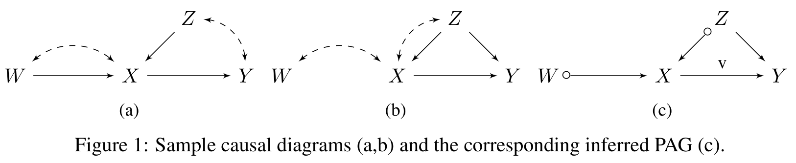
예를 들어 Figure 1(a)의 다이어그램과 질의 \(P_x(y \mid z)\)가 주어지면, do-calculus는 다음 등식을 인가합니다.
\[ P_x(y \mid z) = P(y \mid z, x) \]
좌변의 개입 분포가 우변의 관측 가능한 분포와 같아진다는 뜻입니다. 그러나 이 결과들의 힘에도 불구하고, 다이어그램을 입력으로 요구한다는 점이 아킬레스건입니다. 배경 지식만으로 유일한 참 다이어그램을 특정하기는 대개 불가능하기 때문입니다.
1.3 데이터 주도 접근과 PAG
이 난점을 우회하기 위해, 데이터로부터 먼저 인과 다이어그램을 학습한 뒤 식별을 수행하는 문헌이 성장해 왔습니다. 그러나 인과 메커니즘에 대한 실질적 가정 없이 관측 데이터로부터 추론할 수 있는 것은 다이어그램 하나가 아니라 동치류(equivalence class, EC)뿐입니다(Verma, 1993; Spirtes et al., 2001; Pearl, 2000).
- 이 동치류의 대표적 표현이 부분 조상 그래프(partial ancestral graph, PAG)입니다(Zhang, 2008b).
- PAG의 유향 엣지는 조상 관계(ancestral relation)를 부호화하며 반드시 직접적일 필요는 없습니다.
- 원 마크(\(\circ\))는 구조적 불확실성(structural uncertainty)을 나타냅니다.
- \(v\)로 표시된 유향 엣지는 측정되지 않은 교란자가 없음을 뜻합니다.
PAG에서의 식별이 단일 다이어그램에서의 식별보다 어려운 이유는 두 가지입니다. ① 구조적 불확실성이 남아 있고, ② 대부분의 경우 동치류의 각 원소를 열거하는 것이 불가능하기 때문입니다.
1.4 기존 접근의 계보와 각각의 한계
| 접근 | 내용 | 한계 |
|---|---|---|
| Zhang (2007) | do-calculus를 PAG로 확장. 열거 없이 구조적 불확실성을 다룸 | 식별 가능한 효과를 모두 포착하지 못함(§3에서 확인). 또한 관심 효과를 식별하는 규칙 유도열(sequence of derivations)이 존재하는지 판정하는 것 자체가 계산적으로 어려움 |
| Jaber et al. (2019a), IDP | PAG가 주어졌을 때 주변 효과 \(P_{\mathbf{x}}(\mathbf{y})\)를 식별하는 완전한 알고리즘 | 결합 효과 \(P_{\mathbf{x}}(\mathbf{y} \cup \mathbf{z})\)가 식별 가능할 때만 조건부 효과에 쓸 수 있음. 그런데 결합 효과가 식별 불가능해도 조건부 효과는 식별 가능한 경우가 많음(§4.2) |
| Jaber et al. (2019b) | 조건부 효과 식별 알고리즘을 제안 | 완전성이 증명되지 않음 |
| Hyttinen et al. (2015) | SAT(불리언 제약 만족) 솔버 기반 접근 | 성격이 다소 달라 이 논문의 비교 범위 밖(각주 1). 부록 G.2에서 실행 시간만 비교 |
1.5 기여 (Contributions)
이 논문은 관측 분포 + (완전히 특정된 인과 다이어그램이 아닌) PAG의 조합으로부터 임의의 조건부 인과효과를 식별하는 데이터 주도 정식화를 추구하며, 다음 세 가지를 기여합니다.
- 새로운 계산법: Zhang(2007)의 최신 계산법을 포함하는 PAG용 인과 계산법을 제안하고, 그 규칙들이 원자적으로 완전(atomic complete)함을 증명합니다. 즉 어떤 규칙이 PAG에서 적용 불가능하다면, 동치류 안의 어떤 인과 다이어그램에서도 대응 규칙이 적용 불가능합니다.
- 완전한 알고리즘: 이 결과를 바탕으로 PAG가 주어졌을 때 조건부 인과효과를 식별하는 알고리즘을 개발하고 완전성을 증명합니다. 즉 알고리즘이 실패하면 동치류 안의 어떤 다이어그램에서 그 효과가 식별 불가능합니다.
- 계산법의 완전성: 마지막으로, 제안한 계산법이 조건부 효과 식별 과제에 대해 완전함을 증명합니다.
2. 준비 (Preliminaries)
표기 규약부터 정리하겠습니다. 볼드 대문자는 변수 집합을, 볼드 소문자는 그 변수들에 대한 값 할당을 나타냅니다.
2.1 구조적 인과 모형 (Structural Causal Models)
- SCM \(M\)은 4-튜플 \(\langle \mathbf{U}, \mathbf{V}, \mathbf{F}, P(\mathbf{U}) \rangle\)입니다.
- \(\mathbf{U}\): 외생(exogenous, 측정되지 않은) 변수 집합
- \(\mathbf{V}\): 내생(endogenous, 측정된) 변수 집합
- \(\mathbf{F}\): 각 내생 변수 \(V_i \in \mathbf{V}\)를 결정하는 함수 \(f_i \in \mathbf{F}\)의 모음
- \(P(\mathbf{U})\): 외생 변수에 대한 불확실성
- 모든 SCM은 하나의 인과 다이어그램과 연관됩니다. \(\mathbf{V} \cup \mathbf{U}\)의 모든 변수가 노드가 되고, \(\mathbf{F}\)에 따라 화살표가 그려집니다.
- 표준 관행에 따라 외생 노드는 생략하고, 두 내생 노드가 외생 부모를 공유하면 그 사이에 양방향 점선 호를 추가합니다.
- 재귀적(recursive) 시스템만 다루므로 대응 다이어그램은 비순환적(acyclic)입니다.
- 내생 변수 위에 유도되는 주변 분포 \(P(\mathbf{V})\)를 관측 분포(observational)라 부릅니다.
- d-분리(d-separation) 기준이 인과 다이어그램이 \(P(\mathbf{V})\)에 대해 함의하는 조건부 독립 관계를 포착합니다.
\(\mathbf{C} \subseteq \mathbf{V}\)에 대해, \(Q[\mathbf{C}]\)는 \(\mathbf{V} \setminus \mathbf{C}\)에 개입했을 때 \(\mathbf{C}\)의 개입 후 분포를 나타냅니다.
\[ Q[\mathbf{C}] := P_{\mathbf{v} \setminus \mathbf{c}}(\mathbf{c}) \]
이 표기는 Tian & Pearl(2002)에서 온 것으로, 식별을 “무엇에 개입했는가”가 아니라 “무엇이 개입되지 않고 남았는가”의 관점에서 재구성해 줍니다. 뒤에 나올 IDP 알고리즘 전체가 \(Q[\cdot]\)을 점진적으로 축소해 가는 재귀 구조를 갖습니다.
2.2 조상 그래프 (Ancestral Graphs)
인과 다이어그램들의 동치류를 그래프로 표현하기 위한 장치입니다.
- MAG(maximal ancestral graph)는 동일한 관측 변수 집합을 가지면서, 관측 변수들 사이에 동일한 조건부 독립 관계와 조상 관계를 함의하는 인과 다이어그램들의 집합을 나타냅니다(Richardson & Spirtes, 2002).
- m-분리(m-separation)는 d-분리를 MAG로 확장한 것으로, 인과 다이어그램에서의 d-분리는 그에 대응하는 (관측 변수 위의) 유일한 MAG에서의 m-분리와 정확히 일치합니다.
경로 \(p\)가 \(X\)와 \(Y\) 사이에 있고 \(\mathbf{Z}\)(\(X, Y \notin \mathbf{Z}\))에 대해 활성(active, 또는 m-연결)이라 함은, \(p\) 위의 모든 비-충돌자(non-collider)가 \(\mathbf{Z}\)에 속하지 않고, 모든 충돌자(collider)가 어떤 \(Z \in \mathbf{Z}\)의 조상인 경우를 말합니다.
\(X\)와 \(Y\)가 \(\mathbf{Z}\)에 의해 m-분리된다는 것은, \(\mathbf{Z}\)에 대해 활성인 경로가 \(X\)와 \(Y\) 사이에 하나도 없다는 뜻입니다.
- 서로 다른 MAG가 같은 독립 모형을 함의할 수 있고, 그 경우 마르코프 동치(Markov equivalent)라 합니다.
- PAG \(\mathcal{P}\)는 MAG들의 동치류 \([\mathcal{M}]\)을 나타냅니다.
- \([\mathcal{M}]\)의 모든 MAG와 동일한 인접 관계(adjacency)를 가집니다.
- 불변(invariant) 엣지 마크만을, 그리고 모든 불변 마크를 표시합니다.
- 원 \(\circ\)는 불변이 아닌 마크를 나타냅니다.
- PAG는 관측 변수 위의 독립 모형으로부터 학습 가능하며, FCI 알고리즘이 표준적인 학습 방법입니다(Zhang, 2008b).
- 이 논문은 조건부 독립성에 대한 오라클(oracle)이 주어져 참 PAG를 얻는다고 가정합니다.
2.3 그래프 용어 (Graphical Notions)
PAG 위에서 “확정된” 관계와 “가능한” 관계를 구분하는 어휘가 필요합니다.
- 잠재적 유향 경로(potentially directed / causal path): \(X\)에서 \(Y\)로 가는 경로 중 \(X\)를 향하는 화살촉이 하나도 없는 경로입니다.
- 이때 \(Y\)를 \(X\)의 가능한 후손(possible descendant), \(X\)를 \(Y\)의 가능한 조상(possible ancestor)이라 부릅니다.
- 노드 집합 \(\mathbf{X}\)에 대해 \(\mathrm{An}(\mathbf{X})\)(\(\mathrm{De}(\mathbf{X})\))는 \(\mathbf{X}\)와 그 가능한 조상(후손)들의 합집합을 나타냅니다.
- 적절한 경로(proper path): 두 집합 \(\mathbf{X}\), \(\mathbf{Y}\) 사이의 경로 중, 한쪽 끝점만 \(\mathbf{X}\)에, 다른 끝점만 \(\mathbf{Y}\)에 있고, 경로 위의 다른 어떤 노드도 \(\mathbf{X}\)나 \(\mathbf{Y}\)에 속하지 않는 경로입니다.
- 경로 \(p\) 위의 연속 삼중항 \(\langle A, B, C \rangle\)에 대해:
- 충돌자(collider): 양쪽 엣지가 모두 \(B\)로 들어오는 경우 (\(A \ast\!\!\to B \leftarrow\!\ast\, C\))
- (확정) 비-충돌자((definite) non-collider): 엣지 중 하나가 \(B\)에서 나가거나, 양쪽 엣지 모두 \(B\)에서 원 마크를 갖고 \(A\)와 \(C\) 사이에 엣지가 없는 경우
- 확정 상태 경로(definite status path): 경로 위의 모든 비-끝점 노드가 충돌자이거나 비-충돌자인 경로입니다.
- 원 경로(circle path): \(X\)와 \(Y\) 사이 경로의 엣지 마크가 전부 원인 경로입니다.
- 버킷(bucket): 원 경로로 연결된 노드들의 폐포(closure)입니다. PAG가 주어지면 노드들은 유일한 버킷 집합으로 분할됩니다.
PAG에는 원 마크 때문에 충돌자인지 아닌지조차 확정되지 않은 노드가 존재합니다. 이 논문의 계산법(§3.2)은 그런 애매한 노드가 있는 경로는 아예 논의에서 제외하고 확정 상태 경로만 차단하면 된다는 관찰 위에 세워집니다. 이것이 Zhang(2007)보다 강력해지는 이유입니다.
한편 버킷은 “원 경로로 얽혀 있어 내부의 인과 정보가 사실상 없는 노드 덩어리”입니다. 뒤의 알고리즘은 개입을 개별 노드가 아니라 버킷 단위로 수행합니다. 버킷 내부에는 인과 정보가 거의 또는 전혀 없으므로 버킷의 부분집합에 대한 개입의 주변 효과는 식별 불가능하기 때문입니다.
- 가시적 엣지(visible edge): MAG 또는 PAG의 유향 엣지 \(X \to Y\)가 가시적이라 함은, 대응 동치류 안에 \(X\)와 \(Y\)의 관계가 교란된(confounded) 인과 다이어그램이 존재하지 않는 경우입니다.
- 어떤 유향 엣지가 가시적인지는 그래프적 조건으로 쉽게 판정할 수 있으므로(Zhang, 2008a), 논문은 가시적 엣지를 \(v\)로 표시합니다.
2.4 PAG에서의 조작 (Manipulations in PAGs)
do-calculus 규칙은 그래프를 잘라낸 뒤 분리를 확인하는 형태이므로, PAG에서 그 “자르기”를 정의해야 합니다.
\(\mathcal{P}\)를 \(\mathbf{V}\) 위의 PAG, \(\mathbf{X} \subseteq \mathbf{V}\)라 하자. \(\mathcal{P}_{\mathbf{X}}\)는 \(\mathbf{X}\) 위의 유도 부분그래프(induced subgraph)를 나타낸다.
- \(\mathbf{X}\)-하부 조작(\(\mathbf{X}\)-lower-manipulation): \(\mathcal{P}\)에서 가시적이면서 \(\mathbf{X}\)의 변수에서 나가는 엣지를 모두 삭제하고, \(\mathbf{X}\)의 변수에서 나가지만 비가시적인 엣지는 모두 양방향 엣지로 교체하며, 나머지는 그대로 둔다. 결과 그래프를 \(\mathcal{P}_{\underline{\mathbf{X}}}\)로 표기한다.
- \(\mathbf{X}\)-상부 조작(\(\mathbf{X}\)-upper-manipulation): \(\mathcal{P}\)에서 \(\mathbf{X}\)의 변수로 들어오는 엣지를 모두 삭제하고, 나머지는 그대로 둔다. 결과 그래프를 \(\mathcal{P}_{\overline{\mathbf{X}}}\)로 표기한다.
인과 다이어그램에서 하부 조작 \(\mathcal{G}_{\underline{\mathbf{X}}}\)는 \(\mathbf{X}\)에서 나가는 화살표를 그냥 지웁니다. 그런데 PAG의 유향 엣지 \(X \to Y\)가 비가시적이라면, 동치류 안의 어떤 다이어그램에서는 그 엣지에 잠재 교란이 섞여 있을 수 있습니다.
- 그 경우 \(X\)에서 나가는 인과적 부분만 지우면 교란 성분이 남아 있어야 합니다.
- 그 남은 성분을 표현하는 것이 바로 양방향 엣지 \(\leftrightarrow\)입니다.
즉 “가시적이면 삭제, 비가시적이면 \(\leftrightarrow\)로 교체”는 동치류 전체에 대해 안전한 최소 조작입니다. 반면 상부 조작은 들어오는 엣지를 지우는 것이라 이런 미묘함이 없습니다.
3. PAG를 위한 인과 계산법 (Causal Calculus for PAGs)
Pearl(1995)의 인과 계산법은 인과 다이어그램으로부터의 효과 식별 과제를 이해하고 결국 해결하는 데 결정적이었던 선구적 업적입니다. Zhang(2007)은 이를 조상 그래프 맥락으로 일반화하여, 특정 인과 다이어그램 대신 PAG를 입력으로 받는 계산법을 만들었습니다.
- §3.1에서는 Zhang의 규칙들을 살펴보고, 왜 그것만으로는 식별 문제를 일반적으로 풀 수 없는지 이해합니다.
- §3.2에서는 원래 계산법의 또 다른 일반화를 도입하고, 그것이 원자적 식별에 대해 완전함을 증명합니다.
3.1 Zhang의 계산법 (Zhang’s Calculus)
정의 1의 m-분리 기준을 PAG로 확장하는 가장 자연스러운 방법은 가능한 m-연결 경로를 전부 차단하는 것입니다.
PAG에서 \(X\)와 \(Y\) 사이의 경로 \(p\)가 노드 집합 \(\mathbf{Z}\)(\(X, Y \notin \mathbf{Z}\); 공집합 가능)에 대해 가능한 m-연결 경로라 함은, \(p\) 위의 모든 확정 비-충돌자가 \(\mathbf{Z}\)의 원소가 아니고, 모든 충돌자가 \(\mathbf{Z}\)의 어떤 원소의 가능한 조상인 경우를 말한다.
\(X\)와 \(Y\) 사이에 \(\mathbf{Z}\)에 대한 가능한 m-연결 경로가 하나도 없으면, \(X\)와 \(Y\)는 \(\mathbf{Z}\)에 의해 \(\hat{m}\)-분리된다고 한다.
이 분리 개념을 사용해 Zhang(2007)은 다음 계산법을 제안했습니다.
\(\mathcal{P}\)를 \(\mathbf{V}\) 위의 PAG, \(\mathbf{X}, \mathbf{Y}, \mathbf{W}, \mathbf{Z}\)를 \(\mathbf{V}\)의 서로소인 부분집합이라 하자. 다음 규칙들은 타당(valid)하다. 즉 규칙의 전건(antecedent)이 성립하면, 후건(consequent)이 \(\mathcal{P}\)가 나타내는 모든 MAG에서, 따라서 모든 인과 다이어그램에서 성립한다.
- \(P(\mathbf{y} \mid do(\mathbf{w}), \mathbf{x}, \mathbf{z}) = P(\mathbf{y} \mid do(\mathbf{w}), \mathbf{z})\), \(\mathbf{X}\)와 \(\mathbf{Y}\)가 \(\mathcal{P}_{\overline{\mathbf{W}}}\)에서 \(\mathbf{W} \cup \mathbf{Z}\)에 의해 \(\hat{m}\)-분리되면
- \(P(\mathbf{y} \mid do(\mathbf{w}), do(\mathbf{x}), \mathbf{z}) = P(\mathbf{y} \mid do(\mathbf{w}), \mathbf{x}, \mathbf{z})\), \(\mathbf{X}\)와 \(\mathbf{Y}\)가 \(\mathcal{P}_{\overline{\mathbf{W}}, \underline{\mathbf{X}}}\)에서 \(\mathbf{W} \cup \mathbf{Z}\)에 의해 \(\hat{m}\)-분리되면
- \(P(\mathbf{y} \mid do(\mathbf{w}), do(\mathbf{x}), \mathbf{z}) = P(\mathbf{y} \mid do(\mathbf{w}), \mathbf{z})\), \(\mathbf{X}\)와 \(\mathbf{Y}\)가 \(\mathcal{P}_{\overline{\mathbf{W}}, \overline{\mathbf{X}(\mathbf{Z})}}\)에서 \(\mathbf{W} \cup \mathbf{Z}\)에 의해 \(\hat{m}\)-분리되면
여기서 \(\mathbf{X}(\mathbf{Z}) := \mathbf{X} \setminus \mathrm{PossAn}(\mathbf{Z})_{\mathcal{P}_{\overline{\mathbf{W}}}}\)이다.
세 규칙의 역할은 Pearl의 do-calculus와 같습니다.
- 규칙 1: m-분리를 개입 상황으로 일반화합니다 — 관측치의 추가/삭제.
- 규칙 2: 부분집합 \(\mathbf{X}\)를 개입과 조건화 사이에서 교대(alternate)시킵니다 — do와 관측의 교환.
- 규칙 3: 개입 \(do(\mathbf{X} = \mathbf{x})\)의 추가/삭제를 허용합니다.
이제 두 예시가 이 결과의 한계를 드러냅니다. 첫 번째는 정의 2로 그래프적 분리를 확립하는 방식의 결함을, 두 번째는 규칙 3에서 \(\mathbf{X}(\mathbf{Z})\)를 평가하는 방식의 결함을 보여 줍니다.
Example 1 — 정의 2가 너무 보수적인 경우
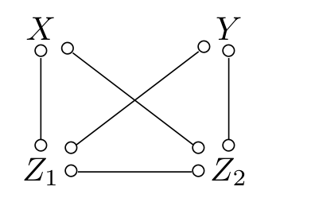
Figure 2의 PAG \(\mathcal{P}\)를 봅시다.
- \(X\)와 \(Y\)가 \(\mathcal{P}\)에서 인접하지 않으므로, 동치류 안의 모든 인과 다이어그램에서 \(X\)와 \(Y\)가 \(\{Z_1, Z_2\}\)로 분리 가능함을 쉽게 보일 수 있습니다.
- 각 다이어그램에 Pearl의 do-calculus 규칙 3을 적용하면 \(P_x(y \mid z_1, z_2) = P(y \mid z_1, z_2)\)입니다.
- 각 다이어그램에 규칙 2를 적용하면 \(P_x(y \mid z_1, z_2) = P(y \mid z_1, z_2, x)\)도 성립합니다.
- 그런데 가능한 m-연결 경로 \(\langle X, Z_1, Z_2, Y \rangle\) 때문에, 명제 1의 규칙 3과 규칙 2는 \(\mathcal{P}\)에 적용할 수 없습니다.
정리하면: Pearl의 계산법 규칙 2, 3이 동치류의 각 다이어그램에는 적용 가능한데도, Zhang의 계산법으로는 같은 결과를 얻을 수 없습니다.
Example 2 — 규칙 3의 \(\mathbf{X}(\mathbf{Z})\) 평가 문제
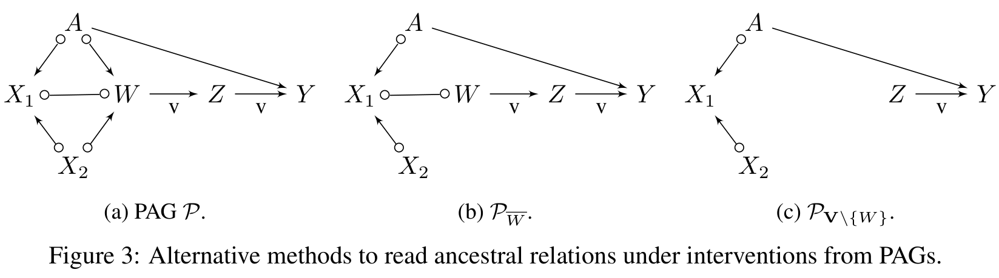
Figure 3(a)의 PAG와, 등식 \(P_{w, x_1, x_2}(y \mid z) = P_w(y \mid z)\)의 성립 여부를 생각해 봅시다.
- 명제 1의 규칙 3을 적용하려면 Figure 3(b)의 조작된 그래프에서 \(\{X_1, X_2\}\)가 \(\{W, Z\}\)가 주어졌을 때 \(\{Y\}\)로부터 분리되는지 확인해야 하는데, 이 경우 성립하지 않습니다.
- 그러나 이 규칙은 적용 가능하도록 개선될 수 있습니다(§3.2). 결정적인 단계는 \(\mathbf{X}(\mathbf{Z})\)를 \(\mathcal{P}_{\overline{\mathbf{W}}}\)가 아니라 \(\mathcal{P}_{\mathbf{V} \setminus \mathbf{W}}\)에서 평가하는 것입니다.
3.2 새로운 계산법 (A New Calculus)
Zhang(2007) 계산법의 분석을 토대로, 이 논문은 확정 m-연결 경로를 차단하는 것을 중심으로 규칙 집합을 새로 세웁니다.
PAG에서 \(X\)와 \(Y\) 사이의 경로 \(p\)가 집합 \(\mathbf{Z}\)(\(X, Y \notin \mathbf{Z}\); 공집합 가능)에 대해 확정 m-연결 경로라 함은, \(p\)가 확정 상태 경로이고, \(p\) 위의 모든 확정 비-충돌자가 \(\mathbf{Z}\)의 원소가 아니며, 모든 충돌자가 \(\mathbf{Z}\)의 어떤 원소의 조상인 경우를 말한다.
\(X\)와 \(Y\) 사이에 \(\mathbf{Z}\)에 대한 확정 m-연결 경로가 하나도 없으면, \(X\)와 \(Y\)는 \(\mathbf{Z}\)에 의해 m-분리된다고 한다.
모든 확정 m-연결 경로는 정의 2의 가능한 m-연결 경로이지만, 그 역은 성립하지 않습니다.
Figure 2의 PAG를 봅시다.
- \(X\)–\(Y\) 사이의 확정 상태 경로는 둘입니다: \(X \circ\!\!-\!\!\circ Z_1 \circ\!\!-\!\!\circ Y\)와 \(X \circ\!\!-\!\!\circ Z_2 \circ\!\!-\!\!\circ Y\). 여기서 \(Z_1\), \(Z_2\)는 확정 비-충돌자입니다(양쪽 마크가 원이고 두 이웃이 인접하지 않으므로).
- \(\mathbf{Z} = \{Z_1, Z_2\}\)가 주어지면 이 두 경로가 모두 차단됩니다.
- 반면 경로 \(X \circ\!\!-\!\!\circ Z_1 \circ\!\!-\!\!\circ Z_2 \circ\!\!-\!\!\circ Y\)는 확정 상태가 아닙니다. \(Z_1\)과 \(Z_2\)가 이 경로 위에서 충돌자도 비-충돌자도 아니기 때문입니다(\(Z_1\)의 양 이웃 \(X\)와 \(Z_2\)가 서로 인접해 있으므로 “원-원 + 비인접” 조건이 깨집니다).
- 따라서 이 경로는 정의 2로는 가능한 m-연결 경로이지만 정의 3으로는 확정 m-연결 경로가 아닙니다.
차단해야 할 경로가 줄어든다 = 분리를 선언하기가 쉬워진다 = 계산법이 더 강력해진다. 이것이 §3.2 전체의 동력입니다.
이제 이 새 정의로 더 강력한 계산법을 정식화합니다.
\(\mathcal{P}\)를 \(\mathbf{V}\) 위의 PAG, \(\mathbf{X}, \mathbf{Y}, \mathbf{W}, \mathbf{Z}\)를 \(\mathbf{V}\)의 서로소인 부분집합이라 하자. 다음 규칙들은 타당하다. 즉 전건이 성립하면 후건이 \(\mathcal{P}\)가 나타내는 모든 MAG, 따라서 모든 인과 다이어그램에서 성립한다.
규칙 1 (관측의 삽입/삭제)
\[ P(\mathbf{y} \mid do(\mathbf{w}), \mathbf{x}, \mathbf{z}) = P(\mathbf{y} \mid do(\mathbf{w}), \mathbf{z}) \]
단, \(\mathbf{X}\)와 \(\mathbf{Y}\)가 \(\mathcal{P}_{\overline{\mathbf{W}}}\)에서 \(\mathbf{W} \cup \mathbf{Z}\)에 의해 m-분리되면.
규칙 2 (행위/관측의 교환)
\[ P(\mathbf{y} \mid do(\mathbf{w}), do(\mathbf{x}), \mathbf{z}) = P(\mathbf{y} \mid do(\mathbf{w}), \mathbf{x}, \mathbf{z}) \]
단, \(\mathbf{X}\)와 \(\mathbf{Y}\)가 \(\mathcal{P}_{\overline{\mathbf{W}}, \underline{\mathbf{X}}}\)에서 \(\mathbf{W} \cup \mathbf{Z}\)에 의해 m-분리되면.
규칙 3 (행위의 삽입/삭제)
\[ P(\mathbf{y} \mid do(\mathbf{w}), do(\mathbf{x}), \mathbf{z}) = P(\mathbf{y} \mid do(\mathbf{w}), \mathbf{z}) \]
단, \(\mathbf{X}\)와 \(\mathbf{Y}\)가 \(\mathcal{P}_{\overline{\mathbf{W}}, \overline{\mathbf{X}(\mathbf{Z})}}\)에서 \(\mathbf{W} \cup \mathbf{Z}\)에 의해 m-분리되면. 여기서
\[ \mathbf{X}(\mathbf{Z}) := \mathbf{X} \setminus \mathrm{PossAn}(\mathbf{Z})_{\mathcal{P}_{\mathbf{V} \setminus \mathbf{W}}} \]
명제 1과 정리 1의 세 가지 차이
겉모습은 거의 같지만, 두 계산법 사이에는 결정적인 차이가 둘 있고 증명 전략에 대한 관찰이 하나 더 있습니다.
① 차단해야 할 경로의 범위 — 정리 1은 확정 상태 경로만 차단하면 됩니다. 그래서 \(\hat{m}\)-분리가 아니라 m-분리를 씁니다.
Figure 2의 PAG \(\mathcal{P}\)에서 규칙 2로 \(P_x(y \mid z_1, z_2) = P(y \mid x, z_1, z_2)\)를 확인해 보겠습니다.
- PAG의 모든 엣지가 원 엣지이므로 \(\mathcal{P}_{\underline{X}} = \mathcal{P}\)입니다(하부 조작은 \(X\)에서 나가는 가시적 엣지를 지우는데, 가시적 유향 엣지가 하나도 없습니다).
- 앞서 보았듯 \(\mathbf{Z} = \{Z_1, Z_2\}\)는 \(X\)와 \(Y\) 사이의 모든 확정 상태 경로를 차단합니다.
- 따라서 \(X\)와 \(Y\)는 \(\mathbf{Z}\)에 의해 m-분리되고, 규칙 2에 의해 \(P_x(y \mid z_1, z_2) = P(y \mid x, z_1, z_2)\)가 성립합니다. Example 1에서 Zhang의 계산법이 놓쳤던 바로 그 결론입니다.
② \(\mathbf{X}(\mathbf{Z})\)를 어디서 평가하는가 — 정리 1은 \(\mathbf{X}(\mathbf{Z})\)를 \(\mathcal{P}_{\mathbf{V} \setminus \mathbf{W}}\)(유도 부분그래프)에서, 명제 1은 \(\mathcal{P}_{\overline{\mathbf{W}}}\)(상부 조작)에서 평가합니다.
Example 2의 질의를 다시 봅시다. Figure 3(a)의 PAG에서 \(P_{w, x_1, x_2}(y \mid z) = P_w(y \mid z)\)를 정리 1의 규칙 3으로 확인합니다.
- Figure 3(c)가 \(\mathcal{P}_{\mathbf{V} \setminus \{W\}}\)이며, 여기서 \(\mathbf{X} = \{X_1, X_2\}\)는 \(Z\)의 가능한 조상이 아닙니다 — \(W\) 노드가 통째로 사라지면서 \(X_1, X_2 \to \cdots \to Z\)로 가는 통로가 끊기기 때문입니다.
- 따라서 \(\mathbf{X}(\mathbf{Z}) = \mathbf{X}\)이고, \(\mathcal{P}_{\overline{W}, \overline{\mathbf{X}(\mathbf{Z})}}\)에서 \(X_1\)으로 들어오는 엣지들이 잘려 \(\mathbf{X}\)와 \(Y\)가 m-분리됩니다.
- 반면 명제 1은 이를 Figure 3(b)에서 평가하는데, 거기서는 \(X_1 \circ\!\!-\!\!\circ W \to Z\)가 살아 있어 \(X_1\)이 여전히 \(Z\)의 가능한 조상으로 남습니다.
규칙 3의 \(\mathbf{X}(\mathbf{Z})\)는 “\(\mathbf{Z}\)에 인과적으로 영향을 줄 수도 있는 개입 변수”를 골라내 그것만 남기려는 장치입니다. 그런데 \(do(\mathbf{W})\) 하에서는 \(\mathbf{W}\)를 경유하는 인과 통로가 이미 끊겨 있습니다.
- \(\mathcal{P}_{\overline{\mathbf{W}}}\)는 \(\mathbf{W}\)로 들어오는 엣지만 지우므로, \(\mathbf{W}\)에서 나가는 엣지는 남습니다. 그래서 \(\mathbf{X} \to \cdots \to \mathbf{W} \to \cdots \to \mathbf{Z}\) 같은 통로가 살아남아 \(\mathbf{X}\)를 불필요하게 “가능한 조상”으로 만듭니다.
- 정확히 말하면 Figure 3(b)에서는 원 엣지 \(X_1 \circ\!\!-\!\!\circ W\)가 살아 있어 이 현상이 발생합니다.
- \(\mathcal{P}_{\mathbf{V} \setminus \mathbf{W}}\)는 \(\mathbf{W}\)를 아예 제거하므로 그런 허위 조상 관계가 생기지 않습니다.
개입된 변수를 “잘라 내는” 것과 “지워 버리는” 것의 차이가 규칙 3의 적용 범위를 넓히는 셈입니다.
③ 증명 전략 — 정리 1의 증명(부록 C)은 조작된 MAG에서의 m-연결 경로와 대응하는 조작된 PAG에서의 확정 m-연결 경로 사이의 관계로부터 따라 나옵니다.
- Zhang(2008a, 각주 15)은 \(\mathbf{X}, \mathbf{Y} \subset \mathbf{V}\)에 대해, \(\mathcal{M}_{\overline{\mathbf{Y}}, \underline{\mathbf{X}}}\)에 m-연결 경로가 있으면 \(\mathcal{P}_{\overline{\mathbf{Y}}, \underline{\mathbf{X}}}\)에 확정 m-연결 경로가 있다고 추측(conjecture)했습니다.
- 이 논문은 계산법 규칙에 필요한 특수한 조작 클래스에 대해 그 추측이 참임을 증명합니다.
정리 2: 원자적 완전성 (Atomic Completeness)
새 계산법이 얼마나 팽팽한지를 재는 결과입니다.
정리 1의 계산법은 원자적으로 완전(atomically complete)하다. 즉 어떤 규칙이 PAG에서 적용 불가능하다면, 마르코프 동치류 안의 어떤 인과 다이어그램에서 Pearl 계산법의 대응 규칙 역시 적용 불가능하다.
“원자적”의 의미를 짚어 두겠습니다. 이것은 규칙 하나하나(atom)의 적용 가능성에 관한 진술이지, 규칙들을 연쇄해서 효과를 식별하는 능력 전체에 관한 진술이 아닙니다. 후자는 §4의 정리 3과 정리 4에서 다뤄집니다.
예시: Figure 1(c)의 PAG \(\mathcal{P}\)를 봅시다.
- \(\mathcal{P}_{\overline{X}, \underline{Z}}\)에서 \(Z \not\perp\!\!\!\perp Y \mid X\)이므로 규칙 2는 적용 불가능합니다.
- 그런데 Figure 1(a)의 다이어그램이 \(\mathcal{P}\)의 동치류에 속하고, 거기서는 \(Z\)와 \(Y\) 사이의 잠재 교란자 때문에 Pearl 계산법의 대응 규칙도 적용 불가능합니다.
- 즉 PAG 수준의 “적용 불가”는 과도한 보수성이 아니라 실제 구조적 장애물의 반영입니다.
PAG 기반 계산법을 설계할 때 가장 쉬운 실패 모드는 “불확실성이 있으니 일단 조심하자”며 규칙을 지나치게 좁게 만드는 것입니다. Zhang의 계산법이 Example 1에서 막혔던 이유가 정확히 그것이었습니다.
정리 2는 정리 1의 규칙에는 그런 여유(slack)가 남아 있지 않음을 보증합니다. 규칙이 막혔다면 그것은 알고리즘의 소심함이 아니라 데이터가 알려 주지 않는 진짜 불확실성 때문입니다. 이 보증이 있어야 §4에서 “알고리즘이 실패했다 = 식별 불가능하다”는 강한 주장을 세울 수 있습니다.
4. 효과 식별: 완전한 알고리즘 (Effect Identification: A Complete Algorithm)
정리 1의 계산법 규칙을 직접 써서 인과효과를 식별하는 것은 어렵습니다. 관심 효과를 식별하는 유도열이 존재하는지 판정하고, 존재한다면 그것을 찾아내는 일 자체가 계산적으로 어렵기(computationally hard) 때문입니다. 이 절의 목표는 조건부 인과효과를 식별하는 알고리즘을 정식화하는 것입니다.
먼저 PAG로부터의 식별 가능성을 형식화합니다. 이는 인과 다이어그램에 특화된 기존 개념(Pearl, 2000; Tian, 2004)의 일반화입니다.
\(\mathbf{X}, \mathbf{Y}, \mathbf{Z}\)를 내생 변수 \(\mathbf{V}\)의 서로소인 부분집합이라 하자. \(\mathbf{Z}\)가 주어졌을 때 \(\mathbf{X}\)의 \(\mathbf{Y}\)에 대한 인과효과가 PAG \(\mathcal{P}\)로부터 식별 가능하다 함은, \(\mathcal{P}\)가 나타내는 마르코프 동치류 안의 모든 인과 다이어그램 \(\mathcal{D}\)에 대해, 양 \(P_{\mathbf{x}}(\mathbf{y} \mid \mathbf{z})\)가 관측 분포 \(P(\mathbf{V})\)로부터 유일하게 계산될 수 있음을 뜻한다.
정의 4가 요구하는 것은 두 겹입니다.
- 각 다이어그램에서 식별 가능해야 한다 — 어느 하나에서라도 식별 불가능하면 끝입니다.
- 모든 다이어그램에서 같은 값을 줘야 한다 — 각각 식별 가능하더라도 서로 다른 식을 준다면, 우리는 어느 것이 맞는지 알 수 없으므로 PAG 수준에서는 식별 불가능입니다.
따라서 알고리즘이 실패했을 때 완전성을 보이려면 둘 중 하나를 확립해야 합니다. 뒤의 정리 4는 언제나 후자보다 강한 조건(즉 어떤 다이어그램에서 아예 식별 불가능)이 성립함을 증명합니다.
이 절의 구성은 다음과 같습니다. §4.1에서 주변 인과효과를 식별하는 IDP 알고리즘(Jaber et al., 2019a)의 새 버전을 소개합니다. 이 버전의 매력은 효과가 식별 가능할 때 더 단순한 식을 산출하면서도 같은 표현력(주변 식별에 대한 완전성)을 유지한다는 점입니다. §4.2에서는 이 새 알고리즘과 정리 1의 계산법을 결합해 조건부 식별을 위한 완전한 알고리즘을 정식화합니다.
4.1 주변 효과 식별 (Marginal Effect Identification)
인과 다이어그램에서 식별 문제를 푸는 데 결정적이었던 c-성분(c-component)(Tian & Pearl, 2002) 개념을 PAG로 일반화하는 것에서 출발합니다.
PAG 또는 그 임의의 유도 부분그래프에서, 두 노드가 같은 가능한 c-성분(possible c-component, pc-component)에 속한다 함은 다음을 모두 만족하는 경로가 둘 사이에 존재함을 뜻한다.
- 경로 위의 모든 비-끝점 노드가 충돌자이고,
- 경로 위의 어떤 엣지도 가시적이지 않다.
예시 (Figure 1(c)): \(W\)와 \(Z\)는 \(W \circ\!\!\to X \leftarrow\!\!\circ Z\) 때문에 같은 pc-성분에 속합니다(\(X\)가 충돌자이고 두 엣지 모두 비가시적). 반면 \(X\)와 \(Y\)는 같은 pc-성분이 아닙니다. 둘 사이의 직접 엣지가 가시적이고, 경로 \(\langle X, Z, Y \rangle\) 위에서 \(Z\)는 충돌자가 아니기 때문입니다.
pc-성분 위에 영역(region)이라는 핵심 개념을 세웁니다.
\(\mathbf{V}\) 위의 PAG \(\mathcal{P}\)와 \(\mathbf{A} \subseteq \mathbf{C} \subseteq \mathbf{V}\)가 주어졌을 때, \(\mathbf{C}\)에 대한 \(\mathbf{A}\)의 영역 \(\mathcal{R}^{\mathbf{C}}_{\mathbf{A}}\)는 \(\mathcal{P}_{\mathbf{C}}\)에서 \(\mathbf{A}\)의 pc-성분에 속한 노드를 포함하는 버킷들의 합집합이다.
즉 영역은 pc-성분을 버킷 단위로 확장한 것이며, 식별 알고리즘에서 분해(decomposition)의 단위로 쓰입니다.
예시 (Figure 2): \(X\)의 pc-성분은 \(\{X, Z_1, Z_2\}\)이고, 영역은 \(\mathcal{R}^{\mathbf{V}}_{X} = \{X, Z_1, Z_2, Y\}\)입니다. 네 노드가 모두 원 경로로 연결되어 하나의 버킷을 이루므로, pc-성분에 속한 노드 하나만 있어도 버킷 전체가 영역에 편입되기 때문입니다.
명제 2: 새로운 식별 기준
이 정의들과 새 계산법 위에서 새로운 식별 기준을 유도합니다.
\(\mathcal{P}\)를 \(\mathbf{V}\) 위의 PAG, \(\mathbf{T}\)를 \(\mathcal{P}\)의 버킷들의 부분집합의 합집합, \(\mathbf{X} \subset \mathbf{T}\)를 하나의 버킷이라 하자. \(P_{\mathbf{v} \setminus \mathbf{t}}\)(즉 \(Q[\mathbf{T}]\)에 대한 관측 가능한 식)가 주어졌을 때, \(\mathcal{P}_{\mathbf{T}}\)에서
\[ \mathbf{C}_{\mathbf{X}} \cap \mathrm{PossDe}(\mathbf{X}) \subseteq \mathbf{X} \]
이면(\(\mathbf{C}_{\mathbf{X}}\)는 \(\mathbf{X}\)의 pc-성분), \(Q[\mathbf{T} \setminus \mathbf{X}]\)는 다음 식으로 식별 가능하다.
\[ Q[\mathbf{T} \setminus \mathbf{X}] = \frac{P_{\mathbf{v} \setminus \mathbf{t}}}{P_{\mathbf{v} \setminus \mathbf{t}}\!\left(\mathbf{X} \mid \mathbf{T} \setminus \mathrm{PossDe}(\mathbf{X})\right)} \tag{1} \]
두 가지를 유의해야 합니다.
- 개입은 버킷 단위로 이루어지며, 버킷은 단일 노드일 수도 아닐 수도 있습니다. 버킷 내부에는 인과 정보가 거의 또는 전혀 없으므로, 버킷의 부분집합에 대한 개입의 주변 효과는 식별 불가능합니다.
- 입력 분포가 개입 분포일 수 있습니다. 이것이 이 기준의 재귀적 적용을 인가하며, 알고리즘의 재귀 구조를 가능하게 합니다.
식 (1)의 단계별 유도
논문은 부록에서 이 식을 다음 네 줄로 유도합니다. 가정 → 분해 → 규칙 3 → 규칙 2 → 최종식의 흐름을 따라가 보겠습니다.
설정. \(\mathbf{V}^- = \mathbf{T} \setminus \mathrm{PossDe}(\mathbf{X})\), \(\mathbf{V}^+ = \mathbf{T} \setminus (\mathbf{V}^- \cup \mathbf{X})\), \(\mathbf{W} = \mathbf{V} \setminus \mathbf{T}\)로 둡니다. \(\mathbf{B}_1 < \cdots < \mathbf{B}_m\)을 \(\mathcal{P}_{\mathbf{T}}\)의 원 성분들에 대한 위상 순서로 두되, \(\mathbf{X}\) 이후의 모든 원 성분이 \(\mathbf{X}\)의 가능한 후손이 되도록 잡습니다. \(\mathbf{B}^{(i)} := \bigcup_{k \le i} \mathbf{B}_k\)로 표기합니다.
1단계 (정의).
\[ Q[\mathbf{T} \setminus \mathbf{X}] = P_{\mathbf{w} \cup \mathbf{x}}(\mathbf{T} \setminus \mathbf{X}) \tag{2} \]
2단계 (연쇄법칙). 표준 확률 조작으로 위상 순서를 따라 분해합니다.
\[ = \prod_{\{i \mid \mathbf{B}_i \subseteq \mathbf{V}^-\}} P_{\mathbf{w} \cup \mathbf{x}}(\mathbf{B}_i \mid \mathbf{B}^{(i-1)}) \times \prod_{\{i \mid \mathbf{B}_i \subseteq \mathbf{V}^+\}} P_{\mathbf{w} \cup \mathbf{x}}(\mathbf{B}_i \mid \mathbf{B}^{(i-1)} \setminus \mathbf{X}) \tag{3} \]
3단계 (규칙 3으로 \(do(\mathbf{x})\) 제거 — \(\mathbf{V}^-\) 항). \(\mathbf{B}_i \subseteq \mathbf{V}^-\)인 항에 대해 정리 1의 규칙 3을 적용합니다.
\[ = \prod_{\{i \mid \mathbf{B}_i \subseteq \mathbf{V}^-\}} P_{\mathbf{w}}(\mathbf{B}_i \mid \mathbf{B}^{(i-1)}) \times \prod_{\{i \mid \mathbf{B}_i \subseteq \mathbf{V}^+\}} P_{\mathbf{w} \cup \mathbf{x}}(\mathbf{B}_i \mid \mathbf{B}^{(i-1)} \setminus \mathbf{X}) \tag{4} \]
- 왜 성립하는가: \((\mathbf{B}_i \perp\!\!\!\perp \mathbf{X} \mid \mathbf{W} \cup \mathbf{B}^{(i-1)})_{\mathcal{P}_{\overline{\mathbf{W}}, \overline{\mathbf{X}}}}\)이기 때문입니다. \(\mathcal{P}_{\overline{\mathbf{W}}, \overline{\mathbf{X}}}\)에서 \(\mathbf{X}\)와 \(\mathbf{B}_i\) 사이의 어떤 확정 상태 경로도 \(\mathbf{X}\)로 들어오지 않으므로(들어오는 엣지가 잘렸으니), 그 경로는 반드시 \(\mathbf{W} \cup \mathbf{B}^{(i-1)}\)에 후손을 갖지 않는 충돌자를 포함하게 되어 차단됩니다.
4단계 (규칙 2로 \(do(\mathbf{x})\)를 관측으로 — \(\mathbf{V}^+\) 항). \(\mathbf{B}_i \subseteq \mathbf{V}^+\)인 항에 규칙 2를 적용합니다.
\[ = \prod_{\{i \mid \mathbf{B}_i \subseteq \mathbf{V}^-\}} P_{\mathbf{w}}(\mathbf{B}_i \mid \mathbf{B}^{(i-1)}) \times \prod_{\{i \mid \mathbf{B}_i \subseteq \mathbf{V}^+\}} P_{\mathbf{w}}(\mathbf{B}_i \mid \mathbf{B}^{(i-1)}) \tag{5} \]
- 왜 성립하는가: 여기서 명제 2의 조건 \(\mathbf{C}_{\mathbf{X}} \cap \mathrm{PossDe}(\mathbf{X}) \subseteq \mathbf{X}\)가 결정적으로 쓰입니다.
- 이 조건은 \(\mathcal{P}_{\mathbf{T}}\)에서 \(\mathbf{X}\)에 인접한 모든 엣지가 \(\mathbf{X}\)로 들어오거나, \(\mathbf{X}\)에서 나가되 가시적임을 함의합니다.
- \(\mathcal{P}_{\overline{\mathbf{W}}, \underline{\mathbf{X}}}\)에서 하부 조작이 가시적 엣지를 모두 지우므로, \(\mathbf{X}\)와 \(\mathbf{B}_i\) 사이의 적절한 확정 m-연결 경로 \(p\)는 직접 인접일 수 없고 \(\mathbf{X}\)로 들어와야 합니다.
- \(p\) 위에 비-충돌자가 있으면, 그것이 \(\mathbf{B}^{(i-1)}\)에 있어 경로를 막거나, 순서상 \(\mathbf{B}_i\) 뒤에 놓여 비활성 충돌자를 만듭니다. 따라서 모든 비-끝점 노드가 충돌자여야 합니다.
- 마지막으로 \(\mathbf{B}_i\)에 가장 가까운 비-끝점 노드 \(D\)를 보면, \(\mathbf{B}_i\)–\(D\) 엣지가 양방향이거나 \(D\)가 \(\mathbf{B}_i\)의 가능한 자식입니다. 전자는 \(\mathbf{B}_i\)가, 후자는 \(D\)가 조건 \(\mathbf{C}_{\mathbf{X}} \cap \mathrm{PossDe}(\mathbf{X}) \subseteq \mathbf{X}\)를 위반합니다. 따라서 그런 경로 \(p\)는 존재하지 않습니다.
5단계 (최종식). 두 곱을 합치면 전체는 \(\mathbf{T}\)의 모든 원 성분에 대한 곱이고, 거기서 \(\mathbf{X}\) 항만 빠진 형태입니다. 곧
\[ = \frac{P_{\mathbf{v} \setminus \mathbf{t}}}{P_{\mathbf{v} \setminus \mathbf{t}}\!\left(\mathbf{X} \mid \mathbf{T} \setminus \mathrm{PossDe}(\mathbf{X})\right)} \tag{6} \]
가 되어 식 (1)을 얻습니다. \(\blacksquare\)
Example 3 — 새 기준의 힘
Figure 3(a)의 PAG \(\mathcal{P}\)와 질의 \(P_{x_1, x_2, w}(y, z, a)\)를 봅시다.
1회차. 관측 분포 \(P(\mathbf{V})\)를 입력으로, \(\mathbf{T} = \mathbf{V}\), \(\mathbf{X} = \{X_1, W\}\)로 둡니다.
- \(\mathbf{C}_{\mathbf{X}} = \{X_1, W, A, X_2\}\)
- \(\mathrm{PossDe}(\mathbf{X}) = \{X_1, W, Z, Y\}\)
- \(\mathbf{C}_{\mathbf{X}} \cap \mathrm{PossDe}(\mathbf{X}) = \{X_1, W\} = \mathbf{X}\) → 명제 2 적용 가능
\(\mathbf{T} \setminus \mathrm{PossDe}(\mathbf{X}) = \{A, X_2\}\)이므로
\[ P_{\mathbf{x}}(y, z, a, x_2) = \frac{P(\mathbf{V})}{P(x_1, w \mid a, x_2)} = P(a, x_2) \times P(y, z \mid a, w) \]
마지막 등식은 \(P(\mathbf{V}) = P(a, x_2)\, P(x_1, w \mid a, x_2)\, P(y, z \mid a, x_2, x_1, w)\)로 분해한 뒤 단순화한 결과입니다.
2회차. 이제 \(P_{x_1, w}(y, z, a, x_2)\)가 주어진 상태에서 \(X_2\)에 개입합니다.
- \(\mathcal{P}_{\mathbf{V} \setminus \{X_1, W\}}\)에서 \(X_2\)는 다른 노드들과 연결이 끊겨 있으므로 명제 2의 기준을 자명하게 만족합니다.
\[ P_{x_1, x_2, w}(y, z, a) = \frac{P_{x_1, w}(y, z, a, x_2)}{P_{x_1, w}(x_2 \mid y, z, a)} = P(a) \times P(y, z \mid w, a) \]
알고리즘 1: IDP
Algorithm 1 IDP(P, x, y)
Input: PAG P, 서로소인 두 집합 X, Y ⊂ V
Output: P_x(y)에 대한 식 또는 FAIL
1: D ← PossAn(Y) in P_{V\X} # Y의 가능한 조상만 남긴다 (Lemma 20)
2: return Σ_{d\y} IDENTIFY(D, V, P)
3: function IDENTIFY(C, T, Q = Q[T]):
4: if C = ∅ then return 1
5: if C = T then return Q
# P_T 안에서, B는 버킷, C_B는 B의 pc-성분을 뜻한다
6: if ∃ B ⊂ T \ C such that C_B ∩ PossDe(B) in P_T ⊆ B then
7: Q[T \ B]를 Q로부터 계산 # 명제 2 (식 1)
8: return IDENTIFY(C, T \ B, Q[T \ B])
9: else if ∃ B ⊂ C such that R_B ≠ C then # R_B는 R^C_B와 동일
10: return IDENTIFY(R_B, T, Q) × IDENTIFY(R_{C\R_B}, T, Q)
─────────────────────────────────────────────
IDENTIFY(R_B ∩ R_{C\R_B}, T, Q)
11: else throw FAIL세 갈래의 역할을 정리하면 이렇습니다.
| 줄 | 하는 일 | 근거 |
|---|---|---|
| 4–5 | 재귀 종료 조건 | 자명 |
| 6–8 | 목표 밖(그러나 아직 남아 있는) 버킷 \(\mathbf{B}\)를 하나씩 제거(intervene away) | 명제 2 |
| 9–10 | 목표 \(\mathbf{C}\)가 영역 단위로 분해될 수 있으면 쪼개서 각각 재귀 | 명제 5(부록 D) |
| 11 | 둘 다 불가능하면 실패 | — |
기존 IDP(Jaber et al., 2019a)와의 차이는 6–7행에만 있습니다. 기존 버전은 Jaber et al.(2018a, Thm. 1)의 기준 — \(\mathbf{X}\)의 가능한 자식(possible children)에 기반 — 을 쓰는데, 그 기준은 더 많은 효과를 식별하지만 결과 식이 복잡하고 커서(convoluted and usually large) 효과가 식별 가능해도 다루기 어려울 수 있습니다. 새 기준은 가능한 후손(possible descendants)에 기반해 더 약하지만, 놀랍게도 “딱 알맞습니다”.
알고리즘 1은 주변 효과 \(P_{\mathbf{x}}(\mathbf{y})\)의 식별에 대해 완전하다. 더 나아가, 정리 1의 계산법은 표준 확률 조작과 함께 같은 과제에 대해 완전하다.
명제 8(부록 F)의 기준 \(\mathbf{C}_{\mathbf{X}} \cap \mathrm{PossCh}(\mathbf{X}) \subseteq \mathbf{X}\)는 명제 2의 기준 \(\mathbf{C}_{\mathbf{X}} \cap \mathrm{PossDe}(\mathbf{X}) \subseteq \mathbf{X}\)보다 엄격히 약합니다(후자가 전자를 함의하지만 역은 아님). 따라서 한 번의 호출에서는 명제 8이 더 많은 경우를 처리합니다.
그런데 정리 3은 알고리즘 전체로 보면 두 버전의 표현력이 같다고 말합니다. 명제 3(부록 D)이 그 다리를 놓습니다: 알고리즘 1이 실패하면 기존 IDP도 반드시 실패한다. 한 번의 스텝에서 놓친 것을 분해(9–10행)와 재귀가 메워 주기 때문입니다.
결과적으로 표현력은 유지하면서 식은 훨씬 단순해지는 교환이 성립합니다. 알고리즘 설계에서 보기 드물게 깔끔한 결과입니다.
4.2 조건부 효과 식별 (Conditional Effect Identification)
몇 가지 관찰에서 출발해 조건부 인과효과 식별 알고리즘을 정식화합니다. 제안 알고리즘은 정리 1의 계산법과 알고리즘 1의 IDP를 함께 활용합니다.
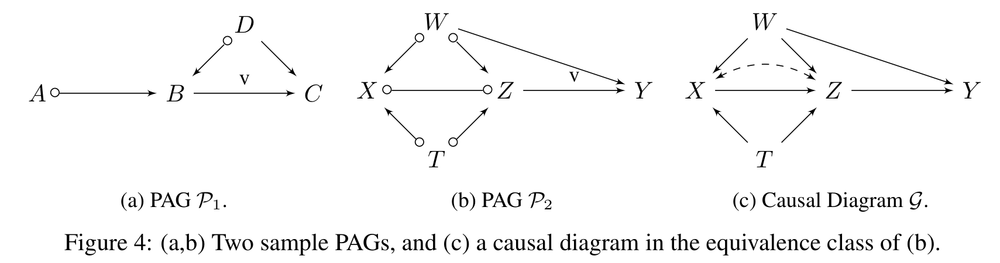
관찰 1: 주변 효과로 환원하기
조건부 효과 \(P_{\mathbf{x}}(\mathbf{y} \mid \mathbf{z})\)는 다음처럼 다시 쓸 수 있습니다.
\[ P_{\mathbf{x}}(\mathbf{y} \mid \mathbf{z}) = \frac{P_{\mathbf{x}}(\mathbf{y}, \mathbf{z})}{\sum_{\mathbf{y}} P_{\mathbf{x}}(\mathbf{y}, \mathbf{z})} \]
따라서 \(P_{\mathbf{x}}(\mathbf{y}, \mathbf{z})\)가 알고리즘 1로 식별 가능하면 조건부 효과도 식별 가능합니다.
관찰 1 (주변 효과, Marginal Effect). Figure 4(a)의 PAG \(\mathcal{P}_1\)에서 인과효과 \(P_b(a, c \mid d)\)를 식별하는 것이 목표라고 합시다. 주변 효과 \(P_b(a, c, d)\)는 IDP로 식별 가능하며, 그 식을 \(E := P(a, d) \times P(c \mid b, d)\)라 하면 목표 효과는 \(E / \sum_{a, c} E\)로 계산됩니다.
관찰 2: 관측을 개입으로 뒤집기
주변 효과 \(P_{\mathbf{x}}(\mathbf{y}, \mathbf{z})\)가 알고리즘 1로 식별되지 않을 때, 관찰 2와 3은 정리 1의 계산법 — 특히 규칙 2 — 을 써서 조건부 효과를 식별하는 기법을 제시합니다. 관찰 2는 조건화 집합의 변수를 개입 집합으로 옮깁니다.
관찰 2 (관측 → 개입, Flip Observations to Interventions). Figure 4(a)의 \(\mathcal{P}_1\)과 질의 \(P_a(c \mid b, d)\)를 봅시다. 관찰 1의 경우와 달리 주변 효과 \(P_a(b, c, d)\)는 IDP로 식별되지 않습니다. 그런데 정리 1의 규칙 2에 의해 \((B \perp\!\!\!\perp C \mid D)_{\mathcal{P}_{\overline{A}, \underline{B}}}\)이므로 \(B\)를 조건화에서 개입으로 옮길 수 있습니다.
\[P_a(c \mid b, d) = P_{a, b}(c \mid d)\]
주변 효과 \(P_{a,b}(c, d)\)는 IDP로 식별 가능하며 \(E := P(d) \times P(c \mid b, d)\)를 얻습니다. 따라서 \(P_a(c \mid b, d) = P_{a,b}(c \mid d) = E / \sum_c E\)입니다.
이 기법은 Shpitser & Pearl(2006)이 인과 다이어그램에 대한 조건부 식별 알고리즘을 만들 때 쓴 것과 같은 트릭입니다.
관찰 3: 개입을 관측으로 뒤집기 (반대 방향!)
관찰 3은 의외입니다. 관찰 2와 정반대로 개입을 관측으로 되돌리기 때문입니다.
이런 처리를 요구하는 PAG의 핵심 구조는 \(\mathbf{X}\)에서 \(\mathbf{Y} \cup \mathbf{Z}\)로 가는, 원 엣지로 시작하는 적절한 가능 유향 경로(proper possibly directed path)의 존재입니다.
직관은 이렇습니다. \(\mathbf{X}\)에서 나가는 첫 엣지가 원 마크라면, 동치류 안 어떤 MAG에서는 그것이 \(\mathbf{X}\)에서 나가는 비가시적 유향 엣지 — 즉 교란된 엣지 — 일 수 있습니다. 그런 엣지 하나면 헤지(hedge)가 만들어져 주변 효과가 무너집니다. 그렇다고 그 변수를 개입 집합에 계속 두면 IDP가 실패합니다. 유일한 탈출구는 애초에 개입하지 않았던 것처럼 조건화로 되돌리는 것입니다.
관찰 3 (개입 → 관측, Flip Interventions to Observations). Example 1의 질의를 다시 봅시다(Figure 2).
- 주변 효과 \(P_x(y, z_1, z_2)\)는 IDP로 식별되지 않습니다.
- \(Z_1\)이나 \(Z_2\)를 개입으로 뒤집을 수도 없습니다. 둘 다 원 엣지(\(\circ\!\!-\!\!\circ\))로 \(Y\)에 인접해 있기 때문입니다.
- 그러나 \(X\)를 조건화 집합으로 뒤집을 수는 있습니다. \(\{Z_1, Z_2\}\)가 주어졌을 때 PAG에 \(X\)–\(Y\) 사이의 확정 m-연결 경로가 없기 때문입니다. 따라서
\[P_x(y \mid z_1, z_2) = P(y \mid z_1, z_2, x)\]
대조 사례. Figure 4(b)의 PAG \(\mathcal{P}_2\)와 질의 \(P_x(y \mid z)\)를 봅시다. 여기서는 \(X\)를 관측으로 되돌릴 수 없습니다. \(\mathcal{P}_{2\underline{X}}\)에서 경로 \(\langle X, W, Y \rangle\)가 \(Z\)가 주어져도 활성이기 때문입니다. 실제로 Figure 4(c)의 인과 다이어그램 \(\mathcal{G}\)는 \(\mathcal{P}_2\)의 동치류에 속하며, 거기서 \(P_x(y \mid z)\)는 증명 가능하게 식별 불가능합니다(Shpitser & Pearl, 2006, Corol. 2). 따라서 정의 4에 따라 \(\mathcal{P}_2\)가 주어졌을 때 그 효과는 식별 불가능합니다.
알고리즘 2: CIDP
세 관찰을 종합하여, PAG가 주어졌을 때 조건부 인과효과를 식별하는 CIDP 알고리즘을 정식화합니다.
Algorithm 2 CIDP(P, x, y, z)
Input: PAG P, 서로소인 세 집합 X, Y, Z ⊂ V
Output: P_x(y|z)에 대한 식 또는 FAIL
1: D ← PossAn(Y ∪ Z) in P_{V\X}
# Phase I — 관찰 3: 원 엣지로 시작하는 가능 유향 경로를 처리
# B_1, ..., B_m 은 P의 버킷들
2: while ∃ B_i s.t. B_i ∩ D ≠ ∅ ∧ B_i ⊄ D do
3: X' ← B_i ∩ X
4: if (X' ⊥ Y | (X \ X') ∪ Z) in P_{overline(X\X'), underline(X')} then
5: x ← x \ x' ; z ← z ∪ x' # 정리 1의 규칙 2 적용
6: D ← PossAn(Y ∪ Z) in P_{V\X}
7: else throw FAIL
# Phase II — 관찰 2: 조건화를 개입으로
# Z_1, ..., Z_m 은 Z_i := Z ∩ B_i 로 Z를 분할
8: while ∃ Z_i s.t. (Z_i ⊥ Y | X ∪ (Z \ Z_i)) in P_{overline(X), underline(Z_i)} do
9: x ← x ∪ z_i ; z ← z \ z_i # 정리 1의 규칙 2 적용
# Phase III — 관찰 1: 주변 효과로 환원
10: E ← IDP(P, x, y ∪ z)
11: return E / Σ_y E세 단계의 역할은 다음과 같습니다.
| 단계 | 줄 | 하는 일 |
|---|---|---|
| Phase I | 1–7 | 관찰 3을 사용해 \(\mathbf{X}\)에서 \(\mathbf{Y} \cup \mathbf{Z}\)로 가는 원 엣지로 시작하는 적절한 가능 유향 경로를 점검한다. 알고리즘적으로는 \(\mathbf{D} = \mathrm{PossAn}(\mathbf{Y} \cup \mathbf{Z})_{\mathcal{P}_{\mathbf{V} \setminus \mathbf{X}}}\)를 반복 계산하며, \(\mathbf{D}\)와 교차하지만 \(\mathbf{D}\)에 포함되지는 않는 버킷 \(\mathbf{B}_i\)가 있는지 본다. 있으면 \(\mathbf{B}_i \cap \mathbf{X}\)를 규칙 2로 개입에서 관측으로 뒤집고, 규칙 2를 적용할 수 없으면 FAIL을 던진다(효과 계산 불가). |
| Phase II | 8–9 | 관찰 2를 사용해 각 버킷 안의 관측 부분집합을 규칙 2로 개입으로 뒤집는다(적용 가능할 때마다). |
| Phase III | 10 | 수정된 \(\mathbf{X}\), \(\mathbf{Z}\)로부터 주변 효과 \(P_{\mathbf{x}}(\mathbf{y} \cup \mathbf{z})\)를 알고리즘 1(IDP)로 계산한다. 성공하면 11행에서 조건부 효과 식을 반환한다. |
두 단계가 서로 반대 방향으로 변수를 옮기는 것이 처음에는 모순처럼 보입니다. 그러나 목적이 다릅니다.
- Phase I은 “IDP가 원리적으로 실패할 구조”를 제거합니다. 원 엣지로 시작하는 가능 유향 경로는 IDP의 비식별 조건(정리 6의 조건 1)을 직격하므로, 그 원인이 되는 개입 변수를 조건화로 빼내야 합니다.
- Phase II는 “IDP에게 더 많은 것을 개입으로 넘겨” 결합 효과를 쉽게 만듭니다. 조건화 변수가 개입으로 바뀌면 그만큼 \(\mathbf{Y} \cup \mathbf{Z}\)가 작아지고 IDP가 다룰 문제가 단순해집니다.
순서도 중요합니다. Phase I이 먼저여야 하는 이유는, Phase I의 실패가 곧 비식별성의 증거이기 때문입니다(명제 6). 반대로 Phase II는 순수한 “기회주의적 개선”이라 실패해도 그냥 넘어갑니다(while 조건이 거짓이면 종료할 뿐 FAIL이 없습니다).
Example 4 — CIDP의 실제 동작
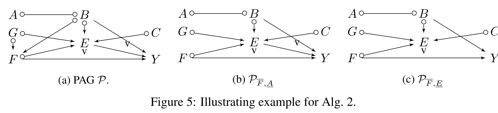
Figure 5(a)의 PAG \(\mathcal{P}\)와 조건부 질의 \(P_{\mathbf{x}}(\mathbf{y} \mid \mathbf{z}) := P_{a, f}(y \mid b, e)\)를 봅시다. 즉 \(\mathbf{X} = \{A, F\}\), \(\mathbf{Y} = \{Y\}\), \(\mathbf{Z} = \{B, E\}\)입니다.
Phase I.
- \(\mathbf{D} = \mathrm{PossAn}(\mathbf{Y} \cup \mathbf{Z})_{\mathcal{P}_{\mathbf{V} \setminus \mathbf{X}}} = \{Y, B, E, C, G\}\)
- 버킷 \(\{A, B\}\)가 2행의 조건을 만족합니다. \(B \in \mathbf{D}\)이지만 \(A \notin \mathbf{D}\)이므로 버킷이 \(\mathbf{D}\)에 포함되지 않기 때문입니다.
- \(\mathbf{X}' = \{A, B\} \cap \mathbf{X} = \{A\}\).
- \(\mathcal{P}_{\overline{F}, \underline{A}}\)(Figure 5(b))에서 \(\mathbf{X}' = \{A\}\)가 \(\{B, E, F\}\)가 주어졌을 때 \(Y\)로부터 m-분리되므로 4행의 조건이 만족됩니다.
- 실제로 \(A\)에서 나가는 모든 경로는 \(A \circ\!\!-\!\!\circ B\)를 지나야 하는데, \(B\)는 이 경로들에서 확정 비-충돌자이고 조건화 집합에 있으므로 차단됩니다.
- 규칙 2로 \(A\)를 조건화 집합으로 옮기면 질의가 갱신됩니다.
\[ P_{\mathbf{x}}(\mathbf{y} \mid \mathbf{z}) = P_f(y \mid a, b, e) \]
Phase II. \(\mathbf{Z}_1 = \{E\}\), \(\mathbf{Z}_2 = \{A, B\}\)로 분할합니다.
- \(\mathcal{P}_{\overline{F}, \underline{E}}\)(Figure 5(c))에서 \(E\)가 \(\{F\} \cup \mathbf{Z}_2\)가 주어졌을 때 \(Y\)로부터 m-분리되므로 8행의 조건이 만족됩니다.
- 규칙 2로 \(E\)를 개입 집합으로 올립니다.
\[ P_{\mathbf{x}}(\mathbf{y} \mid \mathbf{z}) = P_{e, f}(y \mid a, b) \]
- 다음으로 \(\mathbf{Z}_2\)가 \(\mathbf{Z}_1\)이 주어졌을 때 \(Y\)로부터 m-분리되는지 확인하는데, 논문에 따르면 \(B\)와 \(E\) 사이의 양방향 엣지 때문에 성립하지 않습니다(하부 조작이 비가시적 엣지 \(B \circ\!\!\to E\)를 \(B \leftrightarrow E\)로 바꾸기 때문입니다). 따라서 규칙 2를 적용할 수 없고 \(\mathbf{Z}_2\)는 조건화 집합에 남습니다.
Phase III. 알고리즘 1을 호출해 주변 효과 \(P_{e, f}(y, a, b)\)를 계산합니다. 이 효과는 식별 가능하며 단순화된 식은 다음과 같습니다.
\[ P_{e, f}(y, a, b) = P(y \mid b, e, f) \times P(a, b) \]
따라서 최종적으로
\[ P_{a, f}(y \mid b, e) = P_{e, f}(y \mid a, b) = \frac{P(y \mid b, e, f) \times P(a, b)}{\sum_y P(y \mid b, e, f) \times P(a, b)} = P(y \mid b, e, f) \]
를 얻습니다. 개입 분포가 결국 하나의 조건부 관측 분포로 축약되었습니다.
정리 4: 조건부 식별의 완전성
알고리즘 2의 건전성은 알고리즘 1과 정리 1의 건전성으로부터 따라 나옵니다. 문제는 완전성입니다.
정의 4에 따르면, CIDP가 실패했을 때 완전성을 확립하려면 두 조건 중 하나를 보여야 합니다.
- 동치류 안에 서로 다른 식별 결과를 주는 두 인과 다이어그램이 존재하거나,
- 어떤 인과 다이어그램에서 그 효과가 (Shpitser & Pearl, 2006, Corol. 2의 기준에 따라) 식별 불가능하다.
알고리즘 2는 조건부 효과 \(P_{\mathbf{x}}(\mathbf{y} \mid \mathbf{z})\)의 식별에 대해 완전하다. 또한 정리 1의 계산법은 표준 확률 조작과 함께 같은 과제에 대해 완전하다.
정리 4는 언제나 두 번째 경우가 성립함을 증명함으로써 완전성을 확립합니다. 즉 CIDP가 실패하면 동치류 안에 그 효과가 아예 식별 불가능한 다이어그램을 명시적으로 구성할 수 있습니다(부록 E의 명제 6·7). 이 결과가 주변 효과에 대한 계산법 규칙의 완전성(정리 3)과 결합되어, 규칙들이 조건부 효과에 대해서도 완전함을 함의합니다.
완전성 증명의 형태를 눈여겨볼 만합니다. 논문은 “알고리즘이 놓치는 경우가 없다”를 추상적으로 논증하지 않고, 알고리즘이 실패하는 각 지점마다 동치류 안에서 헤지(hedge)를 갖는 인과 다이어그램을 손으로 만들어 냅니다.
- 명제 6: 알고리즘 2가 7행에서 실패하면 → \(\mathbf{X}\)에서 나가는 비가시적 엣지로 시작하는 유향 경로를 갖는 MAG를 보조정리 6·9로 구성하고, 보조정리 10으로 그 첫 엣지를 교란시켜 헤지 \(\mathbf{F} = \{X, A\}\), \(\mathbf{F}' = \{A\}\)를 만듭니다.
- 명제 7: IDP 호출이 실패하면 → IDP의 주변 식별 완전성(정리 7)에 의해 정리 6의 두 그래프 조건 중 하나가 참이고, 각 경우마다 마찬가지로 헤지를 구성합니다.
이런 구성적 증명이라야 “어떤 방법으로도 불가능”이라는 강한 주장이 정당화됩니다. 알고리즘의 한계가 아니라 정보의 한계임을 보이는 것이니까요.
5. 결론 (Conclusions)
이 논문은 PAG로 표현된 인과 다이어그램들의 마르코프 동치류가 주어졌을 때 조건부 개입분포를 식별하는 문제를 다뤘습니다.
- do-calculus의 새로운 일반화를 도입하여 PAG에서 개입분포를 식별할 수 있게 했고(정리 1), 그것이 원자적으로 완전함을 보였습니다(정리 2).
- 이 결과 위에 CIDP 알고리즘(알고리즘 2)을 개발했으며, 이는 건전하고 완전합니다. 즉 식별 가능한 형태 \(P_{\mathbf{x}}(\mathbf{y} \mid \mathbf{z})\)의 조건부 효과를 모두 식별합니다(정리 4).
- 마지막으로, 새 계산법 규칙이 표준 확률 조작과 함께 같은 과제에 대해 완전함을 보였습니다.
이 결과들은 마르코프 동치 하에서의 효과 식별 문제를 닫습니다(close the problem). 즉 특정한 데이터 수집으로부터 원리적으로 계산 가능한 것의 이론적 경계를 완전히 그려 냅니다. 저자들은 새로 도입된 도구가 데이터 과학자들이 실제 환경에서 새로운 효과를 식별하는 데 도움이 되기를 기대한다고 밝힙니다.
부록 A. 확장된 준비 사항 (Extended Preliminaries)
본문 §2에서 압축했던 정의들을 부록 A가 상세히 풀어 놓습니다. 본문과 겹치지 않는 부분만 정리하겠습니다.
SCM의 상세 정의. 각 \(f_i\)는 \(\mathbf{U}_i \cup \mathbf{Pa}_i\)의 정의역에서 \(V_i\)로 가는 사상이며, 여기서 \(\mathbf{U}_i \subseteq \mathbf{U}\), \(\mathbf{Pa}_i \subseteq \mathbf{V} \setminus V_i\)입니다. 인과 다이어그램은 \(\mathbf{U}_i \cup \mathbf{Pa}_i\)의 각 원소에서 \(V_i\)로 화살표를 그어 얻습니다. 구조적 의미론(structural semantics) 안에서 행위 \(X = x\)는 do-연산자 \(do(X = x)\)로 표현되며, 이는 \(X\)의 원래 방정식을 상수 \(x\)로 대체하여 부분모형(submodel) \(M_x\)를 유도하는 조작을 부호화합니다.
조상 그래프의 상세 정의.
- 혼합 그래프(mixed graph): 유향 엣지와 양방향 엣지를 포함할 수 있는 그래프.
- 조상(ancestor): \(A\)에서 \(B\)로 가는 유향 경로가 있으면 \(A\)는 \(B\)의 조상.
- 배우자(spouse): \(A \leftrightarrow B\)가 존재하면 \(A\)는 \(B\)의 배우자.
- 준 유향 순환(almost directed cycle): \(A\)가 \(B\)의 배우자이면서 동시에 조상인 경우.
- 유도 경로(inducing path): 경로 위의 모든 비-끝점 노드가 충돌자이면서 동시에 그 경로 끝점 중 하나의 조상인 경로.
- 조상적(ancestral): 유향 순환도 준 유향 순환도 포함하지 않는 혼합 그래프.
- 최대(maximal): 인접하지 않은 임의의 두 노드 사이에 유도 경로가 없음.
- MAG: 조상적이면서 최대인 그래프(Richardson & Spirtes, 2002).
가능한 부모/자식. 인과 다이어그램 · MAG · PAG에서 \(X\)와 \(Y\)가 인접하고 그 엣지가 \(X\)로 들어오지 않으면, \(Y\)를 \(X\)의 가능한 자식(possible child), \(X\)를 \(Y\)의 가능한 부모(possible parent)라 합니다.
와일드카드 \(\ast\). 편의상 애스터리스크는 PAG의 임의 마크(\(\circ\), \(>\), \(-\)) 또는 MAG의 임의 마크(\(>\), \(-\))를 나타냅니다.
가시성의 정확한 정의. MAG 또는 PAG의 유향 엣지 \(X \to Y\)가 가시적이라 함은, 대응 동치류 안에 \(X\)와 \(Y\) 사이에 \(X\)로 들어오는 유도 경로가 존재하는 인과 다이어그램이 없는 경우입니다. 이는 가시적 엣지가 교란되지 않음(\(X \dashleftarrow\!\dashrightarrow Y\)가 존재하지 않음)을 함의합니다. 논문은 간결함을 위해 가시적 유향 엣지가 아닌 모든 엣지를 “비가시적(invisible)”이라 부릅니다.
부록 B. 배경 결과 (Background Results)
증명에 동원되는 기존 결과들입니다. 어떤 도구가 어디서 쓰이는지 파악해 두면 부록 C–E의 논증을 따라가기 훨씬 수월합니다.
B.1 PAG의 구조적 성질에 관한 보조정리
| 보조정리 | 출처 | 내용 |
|---|---|---|
| Lemma 1 | Zhang (2008b), Lem. A.1 | 세 노드 \(A\), \(B\), \(C\)에 대해 \(A \ast\!\!\to B \circ\!\!-\!\!\ast\, C\)이면 \(A\)와 \(C\) 사이에 \(C\)에 화살촉을 갖는 엣지(\(A \ast\!\!\to C\))가 존재한다. 나아가 \(A \to B\)였다면 \(A\)–\(C\) 엣지는 \(A \to C\)이거나 \(A \circ\!\!\to C\)이다(즉 \(A \leftrightarrow C\)는 아니다) |
| Lemma 2 | Zhang (2006), Lem. 3.3.2 | 두 노드 \(A\), \(B\) 사이에 원 경로가 있으면, (i) \(A\)–\(B\) 엣지가 존재할 경우 그 엣지는 \(A\)나 \(B\)로 들어오지 않으며, (ii) 임의의 다른 노드 \(C\)에 대해 \(C \ast\!\!\to A \iff C \ast\!\!\to B\)이고, 나아가 \(C \leftrightarrow A \iff C \leftrightarrow B\)이다 |
| Lemma 3 | Maathuis & Colombo (2015), Lem. 7.5 | PAG는 \(X\)에서 \(Y\)로 가는 가능 유향 경로와 \(Y \ast\!\!\to X\) 형태의 엣지를 동시에 가질 수 없다 |
| Lemma 4 | Zhang (2008b), Lem. B.1 | \(A\)에서 \(B\)로 가는 가능 유향 경로 \(p\)가 있으면, \(p\)의 어떤 부분수열이 덮이지 않은(uncovered) 가능 유향 경로를 이룬다 |
| Lemma 5 | Zhang (2008b) / Maathuis & Colombo (2015), Lem. 7.2 | \(p = \langle X = V_0, \dots, V_k = Y \rangle\)가 가려지지 않은(unshielded) 가능 유향 경로이고 어떤 \(i\)에 대해 \(V_{i-1} \ast\!\!\to V_i\)이면, 모든 \(j \in \{i+1, \dots, k\}\)에 대해 \(V_{j-1} \to V_j\)이다 |
B.2 PAG에서 MAG · 인과 다이어그램을 구성하는 도구
완전성 증명은 “PAG에서 규칙이 막히면 → 동치류 안에 반례 다이어그램이 존재한다”를 구성적으로 보이기 때문에, PAG → MAG → 인과 다이어그램의 사다리가 필요합니다.
PAG \(\mathcal{P}\)에 다음 절차를 적용해 얻은 그래프 \(\mathcal{M}\)은 \(\mathcal{P}\)의 마르코프 동치류에 속한다.
- \(\mathcal{P}\)의 모든 부분 유향 엣지 \(\circ\!\!\to\)를 유향 엣지 \(\to\)로 교체한다.
- 모든 비유향 엣지 \(\circ\!\!-\!\!\circ\)로 이루어진 \(\mathcal{P}\)의 부분그래프를 가려지지 않은 충돌자가 생기지 않도록 DAG로 방향지운다.
나아가 \(X\)가 \(\mathcal{P}\)의 노드라면, (ii)에서 \(X\)로 들어오는 새 엣지를 만들지 않는 방향 배정을 언제나 찾을 수 있다.
- Lemma 7 (Perković et al., 2018, Lem. 48): Lemma 6을 만족하는 MAG \(\mathcal{M}\)에 대해, \(\mathcal{P}\)에서 \(X \circ\!\!-\!\!\circ Y\), \(X \circ\!\!\to Y\) 또는 비가시적 \(X \to Y\)인 엣지는 \(\mathcal{M}\)에서 비가시적 \(X \to Y\)가 된다.
- Lemma 8 (Jaber et al., 2018a, Prop. 1): \(\mathcal{P}\)의 동치류에 속하는 임의의 다이어그램 \(\mathcal{D}\)에 대해, \(X\)가 \(\mathcal{D}_{\mathbf{A}}\)에서 \(Y\)의 조상이면 \(X\)는 \(\mathcal{P}_{\mathbf{A}}\)에서 \(Y\)의 가능한 조상이다.
- Lemma 9 (Perković et al., 2018, Lem. 49): \(\mathcal{P}\)에 \(X\)에서 \(Y\)로 가는, \(X\)에서 나가는 가시적 엣지로 시작하지 않는 가능 유향 경로 \(p^\ast\)가 있으면, (Lemma 6에 따라 구성된) 어떤 MAG \(\mathcal{M}\)이 존재하여 같은 노드 수열의 경로 \(p\)가 비가시적 엣지로 시작하는 유향 경로인 부분수열 \(p'\)를 포함한다.
- Lemma 10 (Zhang, 2008a, Lem. 10): MAG \(\mathcal{M}\)의 비가시적 유향 엣지 \(A \to B\)에 대해, \(\mathcal{M}\)의 엣지를 그대로 옮기되 \(A \dashleftarrow\!\dashrightarrow B\)를 추가한 인과 다이어그램 \(\mathcal{G}\)를 만들면, \(\mathcal{M}\)은 \(\mathcal{G}\)에 대응하는 MAG이다.
Lemma 6 → 9 → 10은 하나의 파이프라인입니다.
- Lemma 6: PAG의 원 마크를 내가 원하는 방향으로 확정해 동치류 안의 MAG를 고른다. 특히 특정 노드로 들어오는 화살촉을 늘리지 않도록 고를 수 있다.
- Lemma 9: 그렇게 고르면 문제의 가능 유향 경로가 비가시적 유향 경로가 된다.
- Lemma 10: 비가시적 유향 엣지에 점선 양방향 호를 얹어 그 엣지를 교란시킨 인과 다이어그램을 만든다 — 그러고도 여전히 같은 동치류다.
결과적으로 \(X \to A\)가 교란된 다이어그램이 손에 들어오고, 여기서 \(\mathbf{F} = \{X, A\}\), \(\mathbf{F}' = \{A\}\)가 즉시 헤지를 이룹니다. 완전성 증명이 반복해서 쓰는 패턴입니다.
- Lemma 11 · 12: MAG \(\mathcal{M}\)에서 \(X\)와 \(Y\)를 \(\mathbf{Z}\)가 주어졌을 때 m-연결하는 경로 \(p\)가 있고 그 정점들의 어떤 부분수열도 m-연결이 아니면(즉 \(p\)가 최소이면), \(\mathcal{P}\)에서 같은 정점 수열로 이루어진 경로 \(p^\ast\)의 모든 비-끝점 정점은 확정 상태이다. (Lemma 12는 \(p^\ast\)가 \(X\)에서 확정 가시적 엣지로 나가지 않는 경우로 조건을 바꾼 변형입니다. 증명은 각각 Zhang(2006)의 Lemma 1(p.208), Lemma 1’(p.217)과 동일합니다.)
B.3 비식별성의 그래프적 기준
- 정의 7 (C-forest): \(\mathcal{G}\)의 근집합(root set)이 \(\mathbf{Y}\)일 때, \(\mathcal{G}\)의 모든 노드가 하나의 C-성분을 이루고 모든 노드가 자식을 많아야 하나 가지면 \(\mathcal{G}\)를 \(\mathbf{Y}\)-뿌리 C-forest라 한다.
- 정의 8 (헤지, Hedge): \(\mathbf{F}\), \(\mathbf{F}'\)가 \(\mathbf{R}\)-뿌리 C-forest이고 \(\mathbf{F} \cap \mathbf{X} \ne \emptyset\), \(\mathbf{F}' \cap \mathbf{X} = \emptyset\), \(\mathbf{F}' \subset \mathbf{F}\), \(\mathbf{R} \subseteq \mathrm{PossAn}(\mathbf{Y})_{\mathcal{G}_{\mathbf{V} \setminus \mathbf{X}}}\)이면, \(\mathbf{F}\)와 \(\mathbf{F}'\)는 \(P_{\mathbf{x}}(\mathbf{y})\)에 대한 헤지를 이룬다.
- 정리 5 (뒷문-헤지 기준; Shpitser & Pearl, 2006): \(\mathbf{W} \subseteq \mathbf{Z}\)를 \(P_{\mathbf{x}}(\mathbf{y} \mid \mathbf{z}) = P_{\mathbf{x}, \mathbf{w}}(\mathbf{y} \mid \mathbf{z} \setminus \mathbf{w})\)를 만족하는 유일한 최대 집합이라 하자. 그러면 \(P_{\mathbf{x}}(\mathbf{y} \mid \mathbf{z})\)가 \(P(\mathbf{V})\)로부터 식별 가능할 필요충분조건은, 임의의 \(\mathbf{Y}' \subseteq (\mathbf{Y} \cup \mathbf{Z}) \setminus \mathbf{W}\), \(\mathbf{X}' \subseteq \mathbf{X} \cup \mathbf{W}\)에 대해 \(P_{\mathbf{x}'}(\mathbf{y}')\)에 대한 헤지가 존재하지 않는 것이다.
PAG 버전도 필요합니다.
- 정의 9 (dc-성분): MAG · PAG 또는 그 유도 부분그래프에서, 두 노드가 양방향 경로(양방향 엣지로만 이루어진 경로)로 연결되면 같은 확정 c-성분(definite c-component, dc-component)에 속한다.
- 정의 10 (DC-forest): \(\mathbf{C}\) 위의 PAG 부분그래프 \(\mathcal{P}\)에 대해, \(\mathbf{C} = \mathrm{PossAn}(\mathbf{Y})_{\mathcal{P}}\)이면 \(\mathbf{Y}\)를 근집합이라 하고, 그런 성질을 만족하는 부분집합이 없으면 최대라 한다. \(\mathbf{Y}\)가 최대 근집합일 때, \(\mathcal{P}\)가 dc-성분이고 모든 노드가 유향(\(\to\)) 또는 부분 유향(\(\circ\!\!\to\)) 엣지를 통해 가능한 자식을 많아야 하나 가지면 \(\mathcal{P}\)를 \(\mathbf{Y}\)-뿌리 DC-forest라 한다.
- 정의 11 (P-헤지): \(\mathbf{F}\), \(\mathbf{F}'\)가 \(\mathbf{R}\)-뿌리 DC-forest이고 \(\mathbf{F} \cap \mathbf{X} \ne \emptyset\), \(\mathbf{F}' \cap \mathbf{X} = \emptyset\), \(\mathbf{F}' \subset \mathbf{F}\), \(\mathbf{R} \subseteq \mathrm{An}(\mathbf{Y})_{\mathcal{P}_{\mathbf{V} \setminus \mathbf{X}}}\)이면, \(\mathbf{F}\)와 \(\mathbf{F}'\)는 \(\mathcal{P}\)에서 \(P_{\mathbf{x}}(\mathbf{Y})\)에 대한 P-헤지를 이룬다.
PAG \(\mathcal{P}\)가 주어졌을 때, \(P_{\mathbf{x}}(\mathbf{y})\)가 \(\mathcal{P}\)에서 식별 불가능할 필요충분조건은 다음 중 하나가 존재하는 것이다.
- \(\mathbf{X}\)에서 \(\mathbf{Y}\)로 가는, 비가시적 엣지로 시작하는 적절한 가능 유향 경로; 또는
- \(P_{\mathbf{x}}(\mathbf{y})\)에 대한 P-헤지를 이루는 dc-forest \(\mathbf{F}\), \(\mathbf{F}'\).
- 정리 7 (Jaber et al., 2019a, Corol. 2): IDP(알고리즘 1)는 주변 효과 식별에 대해 완전하다.
- Lemma 13 (Jaber et al., 2019a, Lem. 4): \(\mathbf{A} \subset \mathbf{C} \subseteq \mathbf{V}\)일 때, \(Z \notin \mathcal{R}^{\mathbf{C}}_{\mathbf{A}}\)이면서 \(Y \in \mathcal{R}^{\mathbf{C}}_{\mathbf{A}}\)이고 비가시적 \(Z \ast\!\!\to Y\)인 노드 \(Z \in \mathbf{C}\)는 존재하지 않는다. (영역이 “밖에서 안으로 들어오는 비가시적 화살촉”에 대해 닫혀 있다는 뜻이며, 명제 5의 분해가 성립하는 근거입니다.)
B.4 비교 대상이 되는 두 계산법
\(\mathcal{M}\)을 \(\mathbf{V}\) 위의 MAG라 하자. 다음 규칙들은 \(\mathcal{M}\)이 나타내는 모든 인과 다이어그램에서 타당하다.
- \(P(\mathbf{y} \mid do(\mathbf{w}), \mathbf{x}, \mathbf{z}) = P(\mathbf{y} \mid do(\mathbf{w}), \mathbf{z})\), \(\mathbf{X}, \mathbf{Y}\)가 \(\mathcal{M}_{\overline{\mathbf{W}}}\)에서 \(\mathbf{W} \cup \mathbf{Z}\)로 m-분리되면
- \(P(\mathbf{y} \mid do(\mathbf{w}), do(\mathbf{x}), \mathbf{z}) = P(\mathbf{y} \mid do(\mathbf{w}), \mathbf{x}, \mathbf{z})\), \(\mathcal{M}_{\overline{\mathbf{W}}, \underline{\mathbf{X}}}\)에서 m-분리되면
- \(P(\mathbf{y} \mid do(\mathbf{w}), do(\mathbf{x}), \mathbf{z}) = P(\mathbf{y} \mid do(\mathbf{w}), \mathbf{z})\), \(\mathcal{M}_{\overline{\mathbf{W}}, \overline{\mathbf{X}(\mathbf{Z})}}\)에서 m-분리되면
여기서 \(\mathbf{X}(\mathbf{Z}) := \mathbf{X} \setminus \mathrm{An}(\mathbf{Z})_{\mathcal{M}_{\mathbf{V} \setminus \mathbf{W}}}\)이다.
정리 9는 Pearl(2000, Thm. 3.4.1)의 원래 do-calculus로, 위와 같은 형태에서 그래프가 인과 다이어그램 \(\mathcal{G}\)이고 분리가 d-분리이며 \(\mathbf{X}(\mathbf{Z}) := \mathbf{X} \setminus \mathrm{An}(\mathbf{Z})_{\mathcal{G}_{\mathbf{V} \setminus \mathbf{W}}}\)인 버전입니다.
\[ \underbrace{\text{정리 9 (다이어그램, d-분리)}}_{\text{가장 강함 — 그러나 입력이 없다}} \;\longrightarrow\; \underbrace{\text{정리 8 (MAG, m-분리)}}_{\text{동치류 하나의 원소}} \;\longrightarrow\; \underbrace{\text{정리 1 (PAG, 확정 m-분리)}}_{\text{데이터로부터 학습 가능}} \]
정리 1의 증명은 이 사다리를 거꾸로 타고 올라갑니다. “PAG에서 확정 m-분리가 성립한다” → (보조정리 14–17) → “동치류의 MAG에서 m-분리가 성립한다” → (정리 8) → “모든 인과 다이어그램에서 후건이 성립한다.” 즉 정리 1은 정리 8을 PAG 수준으로 끌어올린 것이며, 그 끌어올림의 정당화가 부록 C의 보조정리들입니다.
부록 C. 3.2절의 증명 (Proofs of Section 3.2)
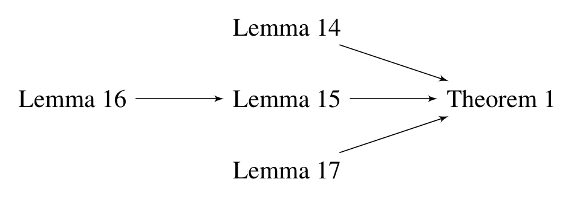
C.1 정리 1의 증명 뼈대
세 규칙 각각은 대응하는 보조정리를 정리 8(MAG용 do-calculus)에 연결하는 것으로 끝납니다.
| 규칙 | 사용 보조정리 | 논증 |
|---|---|---|
| 규칙 1 | Lemma 14 | \(\mathbf{X}\), \(\mathbf{Y}\)가 \(\mathcal{P}_{\overline{\mathbf{W}}}\)에서 \(\mathbf{W} \cup \mathbf{Z}\)로 m-분리되면 \(\mathcal{M}_{\overline{\mathbf{W}}}\)에서도 그렇다 → 정리 8의 규칙 1 적용 |
| 규칙 2 | Lemma 15 | \(\mathcal{P}_{\overline{\mathbf{W}}, \underline{\mathbf{X}}}\)에서 m-분리되면 \(\mathcal{M}_{\overline{\mathbf{W}}, \underline{\mathbf{X}}}\)에서도 그렇다 → 정리 8의 규칙 2 |
| 규칙 3 | Lemma 17 | \(\mathcal{P}_{\overline{\mathbf{W}}, \overline{\mathbf{X}(\mathbf{Z})}}\)에서 m-분리되면 \(\mathcal{M}_{\overline{\mathbf{W}}, \overline{\mathbf{X}(\mathbf{Z})}}\)에서도 그렇다 → 정리 8의 규칙 3 |
세 보조정리는 모두 대우 형태로 진술됩니다. 즉 “MAG의 조작 그래프에 m-연결 경로가 있으면, PAG의 대응 조작 그래프에 확정 m-연결 경로가 있다”입니다.
- Lemma 14: \(\mathcal{M}_{\overline{\mathbf{W}}}\)에 \(\mathbf{W} \cup \mathbf{Z}\)가 주어졌을 때 \(\mathbf{X}\)와 \(\mathbf{Y}\)를 m-연결하는 적절한 경로가 있으면, \(\mathcal{P}_{\overline{\mathbf{W}}}\)에 확정 m-연결하는 적절한 경로가 있다.
- Lemma 15: 같은 진술을 \(\mathcal{M}_{\overline{\mathbf{W}}, \underline{\mathbf{X}}}\) / \(\mathcal{P}_{\overline{\mathbf{W}}, \underline{\mathbf{X}}}\)에 대해.
- Lemma 16: \(\mathcal{M}_{\overline{\mathbf{W}}}\)의 m-연결 경로가 \(\mathbf{X}\)에서 가시적 엣지로 나가지 않으면, \(\mathcal{P}_{\overline{\mathbf{W}}}\)에도 그런 성질을 유지하는 확정 m-연결 경로가 있다. (Lemma 15의 준비 단계)
- Lemma 17: 같은 진술을 \(\mathcal{M}_{\overline{\mathbf{W}}, \overline{\mathbf{X}(\mathbf{Z})}}\) / \(\mathcal{P}_{\overline{\mathbf{W}}, \overline{\mathbf{X}(\mathbf{Z})}}\)에 대해.
증명 기법의 공통 골격은 “최단 경로를 잡는다”입니다. Lemma 14의 증명 안에 등장하는 보조 주장(lemma I)이 대표적입니다.
lemma I. \(p\)를 \(\mathcal{M}_{\overline{\mathbf{W}}}\)에서 \(\mathbf{W} \cup \mathbf{Z}\)가 주어졌을 때 \(\mathbf{X}\)와 \(\mathbf{Y}\)를 m-연결하는 최단 적절 경로라 하고, \(p^\ast\)를 \(\mathcal{P}_{\overline{\mathbf{W}}}\)에서 같은 변수 수열로 이루어진 경로라 하자. 그러면 \(p^\ast\)의 모든 비-끝점 노드는 확정 상태(확정 충돌자 또는 확정 비-충돌자)이다.
왜 최단이 필요한가: 경로가 최단이면 그 정점들의 부분수열이 다시 m-연결 경로가 될 수 없습니다. Lemma 11의 조건이 바로 그것이므로, 최단성이 곧 “확정 상태”를 보증합니다. 논문은 부분수열이 \(\mathcal{M}\)에서는 활성이지만 \(\mathcal{M}_{\overline{\mathbf{W}}}\)에서는 아닌 경우가 존재할 수 없음을 두 경우로 나눠 모순으로 보입니다.
Lemma 17의 추가 논점. 규칙 3의 \(\mathbf{X}(\mathbf{Z})\)가 MAG 쪽과 PAG 쪽에서 다르게 정의되므로, 두 정의가 호환됨을 먼저 보여야 합니다. 임의의 \(X \in \mathbf{X}\)에 대해, 정리 8의 정의로 \(X \notin \mathbf{X}(\mathbf{Z})\)이면 \(X \in \mathrm{An}(\mathbf{Z})_{\mathcal{M}_{\mathbf{V} \setminus \mathbf{W}}}\)입니다. Lemma 8에 의해 \(X \in \mathrm{PossAn}(\mathbf{Z})_{\mathcal{P}_{\mathbf{V} \setminus \mathbf{W}}}\)이므로, 정리 1의 정의로도 \(X \notin \mathbf{X}(\mathbf{Z})\)입니다. 따라서 \(\mathcal{M}_{\overline{\mathbf{W}}, \overline{\mathbf{X}(\mathbf{Z})}}\)의 모든 경로는 \(\mathcal{P}_{\overline{\mathbf{W}}, \overline{\mathbf{X}(\mathbf{Z})}}\)에서도 정의됩니다.
C.2 정리 2(원자적 완전성)의 증명 뼈대
각 규칙에 대해 “전건이 실패하면 → 동치류의 어떤 다이어그램에서 Pearl 규칙도 실패”를 보입니다.
- 규칙 1: 전건이 실패하면 \(\mathcal{P}_{\overline{\mathbf{W}}}\)에 적절한 확정 m-연결 경로 \(p\)가 있습니다. Lemma 6으로 동치류의 MAG \(\mathcal{M}\)을 구성하면 대응 경로 \(p'\)도 m-연결이고, 양방향 엣지를 점선 양방향 호로 바꿔 인과 다이어그램 \(\mathcal{G}\)를 만들면(Lemma 10의 특수 경우) \(\mathcal{G}_{\overline{\mathbf{W}}}\)에서 대응 경로가 활성입니다. 따라서 정리 9의 규칙 1이 \(\mathcal{G}\)에서 적용 불가능합니다.
- 규칙 2: 같은 방식이되, \(\mathbf{X}\)로 들어오는 새 엣지가 생기지 않도록 MAG를 구성하는 것이 핵심입니다(Lemma 6의 마지막 절). \(p\)의 첫 엣지가 \(\mathcal{P}\)에서 \(\mathbf{X}\)로 들어오지 않는다면, 그 구성에 의해 \(\mathcal{M}\)에서는 \(X \to J\)로 나가고 Lemma 7에 의해 비가시적입니다. 그러면 Lemma 10으로 \(X \dashleftarrow\!\dashrightarrow J\)를 추가한 \(\mathcal{G}\)를 만들 수 있습니다.
- 규칙 3: 마찬가지로 \(\mathbf{X}\)로 들어오는 새 엣지가 없는 MAG를 구성합니다. \(X\)가 \(\mathcal{P}_{\mathbf{V} \setminus \mathbf{W}}\)에서 \(\mathbf{Z}\)의 가능한 조상이라면, Lemma 4로 덮이지 않은 가능 유향 경로 \(p_d\)를 얻고, Lemma 6의 구성에 의해 \(\mathcal{M}\)에서 그것이 유향 경로가 됩니다. 따라서 \(\mathcal{M}_{\overline{\mathbf{W}}, \overline{\mathbf{X}(\mathbf{Z})}}\)에서 대응 경로가 정의되고 m-연결입니다.
부록 D. 정리 3의 증명 (Proof of Theorem 3)
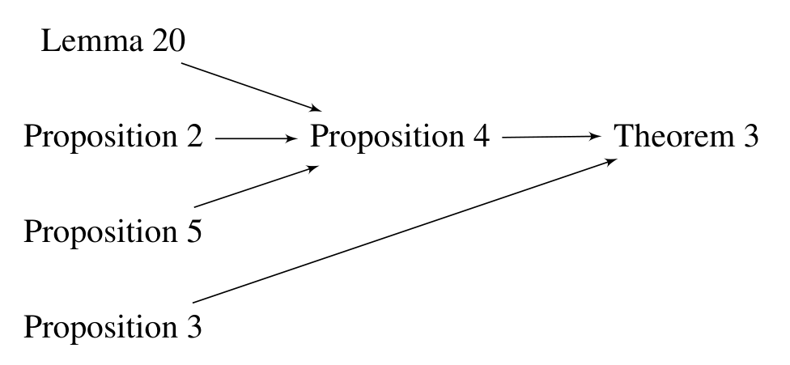
정리 3의 증명은 두 갈래입니다.
- 알고리즘의 완전성: 명제 3이 “알고리즘 1이 실패하면 (Jaber et al., 2019a의) 기존 IDP도 실패한다”를 보이고, 기존 IDP의 완전성(정리 7)과 결합해 알고리즘 1의 완전성을 얻습니다.
- 계산법의 완전성: 명제 4가 “알고리즘 1은 정리 1의 계산법 규칙과 표준 확률 조작의 수열로 사상(map)될 수 있다”를 보입니다. 알고리즘이 완전하고 그 모든 단계가 계산법으로 번역되므로, 계산법도 완전합니다.
D.1 명제 3: 약한 기준이 손해가 아닌 이유
명제 3. PAG \(\mathcal{P}\)와 목표 인과효과 \(P_{\mathbf{x}}(\mathbf{y})\)가 주어졌을 때, 알고리즘 1이 그 효과를 식별하지 못하면 Jaber et al. (2019a)의 IDP도 식별하지 못한다.
증명의 흐름을 요약하면 이렇습니다. 실패를 던진 재귀 호출 \(\mathrm{IDENTIFY}(\mathbf{C}, \mathbf{T}, Q)\)를 봅시다.
- 어떤 버킷/원 성분이 \(\mathbf{C}\)와 \(\mathbf{T} \setminus \mathbf{C}\)로 쪼개져 있다면 기존 IDP도 실패합니다.
- 그렇지 않다면 \(\mathbf{T}\)의 각 버킷은 \(\mathbf{C}\)의 부분집합이거나 \(\mathbf{T} \setminus \mathbf{C}\)의 부분집합입니다. 6행 조건 실패로 \(\mathbf{T} \setminus \mathbf{C}\)의 모든 버킷은 어떤 후손과 같은 pc-성분에 있고, 9행 조건 실패로 모든 버킷 \(\mathbf{B} \subseteq \mathbf{C}\)에 대해 \(\mathcal{R}_{\mathbf{B}} = \mathbf{C}\)입니다.
- \(\mathcal{P}_{\mathbf{C}}\)의 임의의 싱크 버킷(sink bucket, 화살촉만 들어오는 버킷)에서 노드 \(C^\ast\)를 하나 잡습니다. Lemma 2(Zhang, 2006, Lem. 3.3.2)에 의해 \(C^\ast\)는 \(\mathcal{P}_{\mathbf{C}}\)의 모든 버킷의 노드 중 적어도 하나와 같은 pc-성분에 있고, 정의 5에 부합하는 경로들은 \(C^\ast\)로 들어옵니다.
- 그다음 귀납법으로 \(\mathbf{T} \setminus \mathbf{C}\)의 모든 버킷이 \(C^\ast\)와 같은 pc-성분에 있으며 대응 경로가 \(C^\ast\)로 들어옴을 보입니다. 6행 실패에 의해 각 버킷 \(\mathbf{A}\)는 다른 버킷 \(\mathbf{B}\)에 가능한 자식을 가지고, Lemma 1에 의해 \(\mathbf{B}\)의 모든 노드가 \(\mathbf{A}\)의 가능한 자식이 됩니다.
- 따라서 \(\mathbf{T} \setminus \mathbf{C}\)의 모든 버킷은 가능한 자식과 같은 pc-성분에 있어 명제 8의 조건도 실패합니다. 즉 기존 IDP도 같은 자리에서 실패합니다. \(\blacksquare\)
이 논증에 필요한 보조 성질이 Lemma 18입니다.
Lemma 18. \(\mathcal{P}\)가 \(\mathbf{V}\) 위의 PAG이고 \(\mathbf{A} \subseteq \mathbf{V}\)일 때, \(\mathcal{P}_{\mathbf{A}}\)에서 다음이 성립한다. 임의의 세 정점 \(A\), \(B\), \(C\)에 대해 \(A \ast\!\!\to B \,?\!\!\to C\)이고 두 엣지가 모두 비가시적이면, \(A \ast\!\!\to C\)이며 그 엣지도 비가시적이다. (여기서 \(\ast\)는 임의 마크, \(?\)는 꼬리 또는 원을 나타냅니다.)
이는 MAG에 대한 대응 성질인 Lemma 19(Jaber et al., 2018b, Lem. 6)의 PAG 버전입니다. 증명은 \(A \to C\)가 가시적이라고 가정하고, Perković et al.(2018)의 Lem. 43·48로 MAG를 구성해 Lemma 19를 위반시키는 모순 논법을 씁니다.
D.2 명제 4를 떠받치는 두 결과
Lemma 20 (목표 축소). \(\mathbf{D} = \mathrm{PossAn}(\mathbf{Y})_{\mathcal{P}_{\mathbf{V} \setminus \mathbf{X}}}\)라 하면
\[ P_{\mathbf{x}}(\mathbf{y}) = P_{\mathbf{v} \setminus \mathbf{d}}(\mathbf{y}) = \sum_{\mathbf{d} \setminus \mathbf{y}} Q[\mathbf{D}] \]
- 증명 아이디어: 정리 1의 규칙 3을 써서 \(P_{\mathbf{x}}(\mathbf{y}) = P_{\mathbf{v} \setminus \mathbf{d}}(\mathbf{y})\)를 보입니다. \(\mathbf{W} = \mathbf{V} \setminus (\mathbf{D} \cup \mathbf{X})\)로 두고, \(\mathcal{P}_{\overline{\mathbf{X}}, \overline{\mathbf{W}}}\)에서 \(W \in \mathbf{W}\)와 \(Y \in \mathbf{Y}\) 사이에 적절한 확정 m-연결 경로 \(p\)가 있다고 가정해 모순을 유도합니다.
- \(p\)가 \(W\)에서 \(Y\)로 가능 유향이면 \(p\) 위에 \(\mathbf{X}\)의 노드가 없으므로 \(W \in \mathbf{D}\)가 되어 모순.
- 아니라면 \(W\)에 가장 가까운 충돌자 \(C\)를 잡습니다. \(C\)가 활성이려면 \(\mathcal{P}_{\overline{\mathbf{X}}, \overline{\mathbf{W}}}\)에서 \(C\)로부터 \(\mathbf{X}\)로 가는 유향 경로가 있어야 하는데, \(\mathbf{X}\)로 들어오는 엣지를 이미 잘랐으므로 불가능 → 모순.
- 따라서 규칙 3이 적용 가능하고, 두 번째 등식은 표준 확률 조작입니다. \(\blacksquare\)
명제 5 (영역 단위 분해). \(\mathbf{A} \subseteq \mathbf{C}\)이고 \(\mathcal{R}_{(\cdot)} = \mathcal{R}^{\mathbf{C}}_{(\cdot)}\)일 때
\[ Q[\mathbf{C}] = \frac{Q[\mathcal{R}_{\mathbf{A}}] \cdot Q[\mathcal{R}_{\mathbf{C} \setminus \mathcal{R}_{\mathbf{A}}}]}{Q[\mathcal{R}_{\mathbf{A}} \cap \mathcal{R}_{\mathbf{C} \setminus \mathcal{R}_{\mathbf{A}}}]} \]
이 식은 알고리즘 1의 10행이 하는 일 그 자체입니다. 유도는 식 (7)–(11)로 진행됩니다.
- 식 (7)–(8): 위상 순서를 따른 연쇄법칙 분해와, 두 영역에 대한 곱/나눗셈 재배치(표준 확률 조작). 분모의 양들이 0이 아니라고 가정합니다.
- 식 (9): 각 조건부 항에 정리 1의 규칙 3을 적용합니다. \(\mathbf{B}_i \subseteq \mathcal{R}_{\mathbf{A}}\)인 항에 대해 \(\mathbf{W} = \mathbf{C} \setminus (\mathcal{R}_{\mathbf{A}} \cup \mathbf{B}^{i})\)로 두면 \((\mathbf{W} \perp\!\!\!\perp \mathbf{B}_i \mid \mathbf{B}^{(i-1)} \cup (\mathbf{V} \setminus \mathbf{C}))\)가 해당 조작 그래프에서 성립합니다.
- \(p\)가 \(\mathbf{W}\)에 붙은 원 엣지로 시작하면, 그 반대쪽 끝은 \(\mathbf{V} \setminus \mathbf{C}\)에 있고 우리는 \(\mathbf{V} \setminus \mathbf{C}\)로 조건화하므로 차단됩니다.
- \(p\)가 \(\mathbf{W}\)에서 나가는 (부분) 유향 엣지로 시작하면, \(\mathbf{W}\)가 순서상 \(\mathbf{B}_i\) 뒤이므로 비활성 충돌자를 포함해 차단됩니다.
- 식 (10): 각 조건부 항에 정리 1의 규칙 2를 적용합니다. 여기서 Lemma 13(영역의 성질)이 결정적입니다. \(\mathbf{W}\)와 \(\mathbf{B}_i\) 사이의 직접 인접은 \(\mathbf{B}_i\)로 들어와야 하는데, 하부 조작으로 가시적 엣지가 잘렸으므로 가시적일 수 없고, Lemma 13에 의해 비가시적일 수도 없습니다. 따라서 경로는 비-끝점 노드를 가져야 하고, 그 노드들은 모두 충돌자여야 하며, 결국 Lemma 13의 성질을 위반하는 충돌자 경로가 되어 존재할 수 없습니다.
- 식 (11): 세 곱이 각각 \(Q[\mathcal{R}_{\mathbf{A}}]\), \(Q[\mathcal{R}_{\mathbf{C} \setminus \mathcal{R}_{\mathbf{A}}}]\), \(Q[\mathcal{R}_{\mathbf{A}} \cap \mathcal{R}_{\mathbf{C} \setminus \mathcal{R}_{\mathbf{A}}}]\)의 정의와 일치합니다. \(\blacksquare\)
Lemma 21 (부분 위상 순서의 구성). 명제 5의 증명에는 \(\mathcal{P}_{\mathbf{C}}\)의 원 성분들에 대한 건전한 부분 위상 순서가 필요합니다. \(\mathcal{P}\)의 원 성분에 대한 부분 위상 순서 \(O\)가 주어졌을 때 다음 절차가 \(\mathcal{P}_{\mathbf{C}}\)에 대한 건전한 순서 \(O'\)를 만듭니다.
- \(O' = O\)로 초기화한다.
- \(\mathbf{B}_i \cap \mathbf{C} = \emptyset\)인 모든 버킷 \(\mathbf{B}_i\)를 \(O'\)에서 제거한다.
- \(\mathbf{B}_i \setminus \mathbf{C} \ne \emptyset\)인 모든 버킷 \(\mathbf{B}_i\)를 \(\mathcal{P}_{\mathbf{B}_i \setminus \mathbf{C}}\)의 버킷들로 교체한다.
3단계의 건전성은 Lemma 3으로 보입니다. 쪼개진 성분 \(\mathbf{D}_j\), \(\mathbf{D}_k\) 사이에 \(\mathbf{B}_i\) 밖을 지나는 가능 유향 경로가 있다고 가정하면, 그 경로는 유향 또는 부분 유향 엣지를 포함하는데, 동시에 \(\mathbf{D}_k\)에서 \(\mathbf{D}_j\)로 가는 원 엣지만의 경로도 존재하므로 Lemma 3을 위반합니다. \(\blacksquare\)
부록 E. 정리 4의 증명 (Proof of Theorem 4)
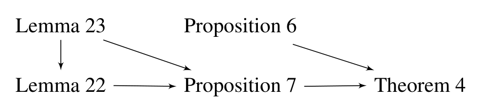
정리 4는 명제 6과 명제 7로부터 따라 나옵니다.
E.1 명제 6: Phase I 실패는 비식별성의 증거
명제 6. 알고리즘 2가 7행에서 실패하면, PAG \(\mathcal{P}\)의 마르코프 동치류 안에 입력 질의 \(P_{\mathbf{x}}(\mathbf{y} \mid \mathbf{z})\)가 정리 5에 의해 식별 불가능한 인과 다이어그램을 구성할 수 있다.
7행에서 실패했다는 것은 \((\mathbf{X}' \not\perp\!\!\!\perp \mathbf{Y} \mid (\mathbf{X} \setminus \mathbf{X}') \cup \mathbf{Z})_{\mathcal{P}_{\overline{\mathbf{X} \setminus \mathbf{X}'}, \underline{\mathbf{X}'}}}\)을 뜻합니다. 적절한 확정 m-연결 경로 \(p\)를 잡고, \(\mathcal{P}\)에서 같은 노드 수열의 경로 \(p'\)를 봅니다. 논문은 네 경우로 나눕니다.
| 경우 | 상황 | 구성 |
|---|---|---|
| 1a | \(p'\)가 \(X\)로 들어오지 않고 \(X\)에 붙은 엣지가 비가시적이며, \(p'\)에 충돌자가 없음 | \(p'\)는 \(X\)에서 \(Y\)로의 가능 유향 경로. Lemma 9로 MAG를, Lemma 10으로 첫 엣지가 교란된 \(\mathcal{G}\)를 구성 → \(\mathbf{F} = \{X, A\}\), \(\mathbf{F}' = \{A\}\)가 \(P_x(y)\)에 대한 헤지 |
| 1b | 같은 상황이나 충돌자가 존재 | \(X\)에서 첫 충돌자 \(C\)까지의 부분경로에 같은 구성을 적용해 \(P_x(z^\ast)\)에 대한 헤지를 만들고, \(C\)의 후손 \(Z^\ast\)가 정리 5의 최대 집합 \(\mathbf{W}\)에 속하지 않음을 추가로 보임 |
| 2a | \(p'\)가 \(X\)로 들어오고, \(X\)의 버킷 \(\mathbf{B}_i\) 안에 \(X^\ast \in \mathrm{PossAn}(\mathbf{Y})_{\mathcal{P}_{\mathbf{V} \setminus (\mathbf{X} \cup \mathbf{Z})}}\)인 노드가 존재 | 경우 1a와 동일하게 진행 |
| 2b | \(p'\)가 \(X\)로 들어오고, \(X^\ast \circ\!\!-\!\!\circ V_j\)이며 \(V_j \in \mathrm{PossAn}(\mathbf{Y} \cup \mathbf{Z})_{\mathcal{P}_{\mathbf{V} \setminus \mathbf{X}}}\) (2행 조건에 의해 이런 개입 노드가 존재) | 가능 유향 경로 \(p = \langle X^\ast, V_j, \dots, Z^\ast \rangle\)를 잡고, \(X^\ast\)와 \(D\) 어느 쪽으로도 새 화살촉이 생기지 않는 MAG를 Lemma 6으로 구성 → \(\mathcal{M}\)에 \(\langle X^\ast, \dots, A, D, \dots, Z^\ast \rangle\)인 유향 경로가 비가시적 엣지로 시작 → Lemma 10으로 첫 엣지를 교란시켜 헤지 구성 |
경우 2b에서 Lemma 2가 두 번 쓰입니다. \(p'\)가 \(X\)로 들어오므로 \(p'\) 위에서 \(X\)에 가장 가까운 노드 \(B\)는 \(X\)의 버킷의 모든 노드에 인접하며(특히 \(A\)에), 그 엣지는 \(A\)로 들어옵니다. 또한 \(B\)–\(A\) 엣지가 양방향인 것과 \(B\)–\(X\) 엣지가 양방향인 것이 동치입니다. 이 성질 덕분에 \(\mathcal{G}\)에서 \(p'\)의 부분경로와 새로 만든 유향 경로를 이어 붙여 활성 경로를 만들 수 있고, 그로부터 \(Z^\ast \notin \mathbf{W}\)가 따라 나옵니다.
E.2 명제 7: IDP 호출 실패도 비식별성의 증거
명제 7. 알고리즘 2의 IDP 호출이 실패하면, PAG \(\mathcal{P}\)의 동치류 안에 입력 질의 \(P_{\mathbf{x}}(\mathbf{y} \mid \mathbf{z})\)가 정리 5에 의해 식별 불가능한 인과 다이어그램을 구성할 수 있다.
IDP가 주변 식별에 대해 완전하므로(정리 7), 10행 호출이 실패하면 정리 6의 두 그래프 조건 중 하나가 참입니다.
- Case 1: \(A \in \mathbf{X}\)에서 \(B \in \mathbf{Y} \cup \mathbf{Z}\)로 가는, 비가시적 엣지로 시작하는 적절한 가능 유향 경로가 존재.
- Case 1a (\(B \in \mathbf{Y}\)): Lemma 9로 MAG를, Lemma 10으로 첫 엣지가 교란된 \(\mathcal{G}\)를 만들면 \(\mathbf{F} = \{A, C\}\), \(\mathbf{F}' = \{C\}\)가 \(P_a(b)\)에 대한 헤지를 이룹니다. 정리 5의 $’ $, \(\mathbf{Y}'\) 조건도 충족되므로 \(\mathcal{G}\)에서, 따라서 \(\mathcal{P}\)에서 식별 불가능합니다.
- \(B \in \mathbf{Z}\)인 하위 경우들도 유사하게, 다만 \(B\)가 정리 5의 최대 집합 \(\mathbf{W}\)에 속하지 않음을 추가로 확인합니다.
- Case 2: P-헤지가 존재. 이 경우도 Lemma 6·10으로 대응하는 인과 다이어그램의 헤지를 구성합니다.
두 보조정리가 이 논증을 뒷받침합니다.
- Lemma 22: 알고리즘 2의 10행을 실행하기 직전, \(\mathbf{D} = \mathrm{PossAn}(\mathbf{Y} \cup \mathbf{Z})_{\mathcal{P}_{\mathbf{V} \setminus \mathbf{X}}}\)에 대해 모든 버킷이 조건을 만족한다(즉 Phase I의 while 루프가 정상 종료했다면 어떤 버킷도 \(\mathbf{D}\)를 가로지르지 않는다).
- Lemma 23: \(X\)에서 \(Y\)로 가는 가능 유향 경로 \(p\)가 있으면, \(p\)의 어떤 최단 부분수열이 덮이지 않은 가능 유향 경로를 이룬다(Lemma 4의 정련된 형태로, 경우 2b에서 쓰입니다).
부록 F. IDP 두 버전의 비교 (Comparison between the IDP Versions)
Jaber et al.(2018a)은 개입이 단일 노드가 아니라 버킷에 대해 이루어지고 입력 분포가 개입 분포일 수 있는 식별 기준(명제 8)을 유도했습니다. 알고리즘 1이 그 기준 대신 명제 2를 쓰는 이유를 부록 F가 설명합니다.
\(\mathcal{P}\)를 \(\mathbf{V}\) 위의 PAG, \(\mathbf{T}\)를 버킷들의 부분집합의 합집합, \(\mathbf{X} \subset \mathbf{T}\)를 하나의 버킷이라 하자. \(P_{\mathbf{v} \setminus \mathbf{t}}\)(즉 \(Q[\mathbf{T}]\))와 \(\mathcal{P}_{\mathbf{T}}\)에 대한 부분 위상 순서 \(\mathbf{B}_1 < \cdots < \mathbf{B}_m\)이 주어졌을 때, \(Q[\mathbf{T} \setminus \mathbf{X}]\)가 식별 가능할 필요충분조건은 \(\mathcal{P}_{\mathbf{T}}\)에서 \(Z\)의 pc-성분에 속하면서 \(\mathbf{X}\)에 속하지 않는 가능한 자식 \(C\)를 갖는 노드 \(Z \in \mathbf{X}\)가 존재하지 않는 것이다. 식별 가능하면
\[ Q[\mathbf{T} \setminus \mathbf{X}] = \frac{P_{\mathbf{v} \setminus \mathbf{t}}}{\prod_{\{i \mid \mathbf{B}_i \subseteq \mathbf{S}_{\mathbf{X}}\}} P_{\mathbf{v} \setminus \mathbf{t}}(\mathbf{B}_i \mid \mathbf{B}^{(i-1)})} \times \sum_{\mathbf{x}} \prod_{\{i \mid \mathbf{B}_i \subseteq \mathbf{S}_{\mathbf{X}}\}} P_{\mathbf{v} \setminus \mathbf{t}}(\mathbf{B}_i \mid \mathbf{B}^{(i-1)}) \tag{12} \]
여기서 \(\mathbf{S}_{\mathbf{X}} = \bigcup_{Z \in \mathbf{X}} \mathbf{S}_Z\)이고 \(\mathbf{S}_Z\)는 \(\mathcal{P}_{\mathbf{T}}\)에서 \(Z\)의 dc-성분, \(\mathbf{B}^{(i-1)}\)은 부분 순서에서 버킷 \(\mathbf{B}_i\)에 선행하는 노드 집합이다.
Lemma 24에 의해 명제 8의 조건은 \(\mathbf{C}_{\mathbf{X}} \cap \mathrm{PossCh}(\mathbf{X}) \subseteq \mathbf{X}\)와 동치입니다.
\[ \underbrace{\mathbf{C}_{\mathbf{X}} \cap \mathrm{PossDe}(\mathbf{X}) \subseteq \mathbf{X}}_{\text{명제 2}} \;\Longrightarrow\; \underbrace{\mathbf{C}_{\mathbf{X}} \cap \mathrm{PossCh}(\mathbf{X}) \subseteq \mathbf{X}}_{\text{명제 8}} \]
역은 성립하지 않습니다. 말로 풀면, 버킷의 pc-성분이 가능한 후손과 (자기 자신 외에) 교차하지 않으면 가능한 자식과도 교차하지 않지만, 그 반대는 아닙니다. 따라서 명제 8이 명제 2보다 더 많은 인과효과를 식별합니다.
그럼에도 명제 2를 택하는 이유는 식의 단순함입니다. 식 (12)는 식 (1)에 비해 훨씬 복잡하고 크며, 효과가 식별 가능하더라도 다루기 어려울(intractable) 수 있습니다. 그리고 정리 3이 보증하듯 알고리즘 전체의 표현력에는 손실이 없습니다.
F.1 두 기준이 갈리는 구체적 예시
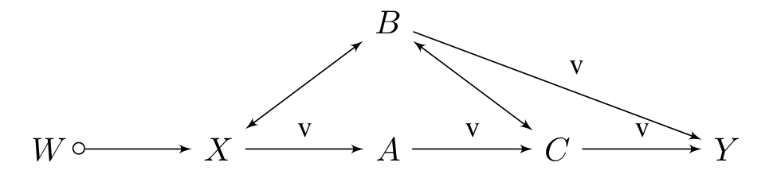
Figure 9의 PAG \(\mathcal{P}\)와 질의 \(P_x(\mathbf{v} \setminus \{x\})\)를 봅시다.
- \(\mathbf{C}_X = \{W, X, B, C\}\), \(\mathrm{PossCh}(X) = \{X, A\}\), \(\mathrm{PossDe}(X) = \{X, A, C, Y\}\)
- 명제 2: \(\mathbf{C}_X \cap \mathrm{PossDe}(X) = \{X, C\} \not\subseteq \{X\}\) → 적용 불가
- 명제 8: \(\mathbf{C}_X \cap \mathrm{PossCh}(X) = \{X\}\) → 적용 가능
\(X\)의 dc-성분은 \(\mathbf{S}_X = \{X, B, C\}\)입니다. 부분 위상 순서 \(W < X < B < A < C < Y\)를 가정하면
\[ P_x(\mathbf{v} \setminus \{x\}) = \frac{P(\mathbf{v})}{P(x \mid w) P(b \mid w, x) P(c \mid w, x, b, a)} \times \sum_x P(x \mid w) P(b \mid w, x) P(c \mid w, x, b, a) \]
부분 순서를 바꾸면 식이 달라집니다. \(W < B < X < A < C < Y\)를 쓰면
\[ P_x(\mathbf{v} \setminus \{x\}) = \frac{P(\mathbf{v})}{P(b \mid w) P(x \mid w, b) P(c \mid w, b, x, a)} \times \sum_x P(b \mid w) P(x \mid w, b) P(c \mid w, b, x, a) \tag{13} \]
이고, \(P(b \mid w)\)가 \(X\)와 무관하므로 분모의 대응 항과 약분되어 다음으로 단순화됩니다.
\[ = \frac{P(\mathbf{v})}{P(x \mid w, b) P(c \mid w, b, x, a)} \times \sum_x P(x \mid w, b) P(c \mid w, b, x, a) \tag{14} \]
관찰: 식의 복잡도가 부분 순서의 선택에 부분적으로 의존합니다. 이것이 명제 8 기반 알고리즘의 실무적 부담입니다.
F.2 알고리즘 3: 기존 IDP
Algorithm 3 IDP(P, x, y) ← Jaber et al. (2019a) 버전
Input: PAG P, 서로소인 두 집합 X, Y ⊂ V
Output: P_x(y)에 대한 식 또는 FAIL
1: D ← PossAn(Y) in P_{V\X}
2: return Σ_{d\y} IDENTIFY(D, V, P)
3: function IDENTIFY(C, T, Q = Q[T]):
4: if C = ∅ then return 1
5: if C = T then return Q
6: if ∃ B ⊂ T \ C such that C_B ∩ PossCh(B) in P_T ⊆ B then # ← 여기만 다르다
7: Q[T \ B]를 Q로부터 계산 # 명제 8 (식 12)
8: return IDENTIFY(C, T \ B, Q[T \ B])
9: else if ∃ B ⊂ C such that R_B ≠ C then
10: return IDENTIFY(R_B, T, Q) × IDENTIFY(R_{C\R_B}, T, Q)
─────────────────────────────────────────────
IDENTIFY(R_B ∩ R_{C\R_B}, T, Q)
11: else throw FAIL알고리즘 1과의 차이는 6행에서 명제 8을 검사한다는 점 하나뿐입니다.
F.3 알고리즘 1이 같은 문제를 푸는 방식
같은 Figure 9의 PAG에서 질의 \(P_x(y)\)를 알고리즘 1로 따라가 보겠습니다.
- \(\mathbf{D} = \{Y, A, B, C\}\)이므로 \(P_x(y) = \sum_{a, b, c} Q[\mathbf{V} \setminus \{W, X\}]\)입니다.
- \(\mathrm{IDENTIFY}(\cdot)\)의 6행: \(\{W, X\}\) 안에서 명제 2의 기준을 만족하는 버킷을 찾습니다.
- \(X\)는 앞서 보았듯 만족하지 못하고, \(W\)는 가능한 자식이자 후손인 \(X\)와 같은 pc-성분에 있으므로 역시 만족하지 못합니다.
- 9행: 명제 5로 질의를 분해합니다. \(\mathbf{B} = \{A\}\)로 두면 \(\mathcal{R}^{\mathbf{D}}_{\mathbf{B}} = \{A\} \ne \mathbf{D}\)이고 \(\mathcal{R}_{\mathbf{B}} \cap \mathcal{R}_{\mathbf{D} \setminus \mathcal{R}_{\mathbf{B}}} = \{A\} \cap \{B, C, Y\} = \emptyset\)이므로
\[ Q[\mathbf{V} \setminus \{W, X\}] = Q[A] \cdot Q[\{B, C, Y\}] \]
- \(Q[A]\)의 계산: \(Y\)는 후손이 없어 명제 2의 기준을 자명하게 만족하므로 \(Q[\mathbf{V} \setminus \{Y\}] = P(\mathbf{v}) / P(y \mid \mathbf{v} \setminus \{y\}) = P(\mathbf{v} \setminus \{y\})\). 이어서 \(C\), \(B\)에 개입해 \(Q[\{W, X, A\}] = P(w, x, a)\)를 얻습니다. 다음으로 유도 부분그래프 \(\mathcal{P}_{\{W, X, A\}}\)에서 \(X\)가 기준을 만족하므로
\[ Q[\{W, A\}] = \frac{P(w, x, a)}{P(x \mid w)} = P(w) \times P(a \mid w, x) \]
마지막으로 \(W\)가 기준을 만족하여
\[ Q[A] = \frac{P(w) \times P(a \mid w, x)}{\dfrac{P(w) \times P(a \mid w, x)}{\sum_w P(w) \times P(a \mid w, x)}} = \sum_w P(w) \times P(a \mid w, x) \]
- \(Q[\{B, C, Y\}]\)의 계산: 마찬가지로 \(A\), \(X\), \(W\) 순으로 개입하여
\[ Q[\{B, C, Y\}] = \sum_{w, x} P(y, c \mid w, x, a, b) \times P(w, x, b) \]
- 최종식:
\[ P_x(y) = \sum_{a, b, c} Q[A] \cdot Q[\{B, C, Y\}] = \sum_{a, b, c} \left( \sum_w P(w) \cdot P(a \mid w, x) \right) \left( \sum_{w, x} P(y, c \mid w, x, a, b) \cdot P(w, x, b) \right) \]
한 스텝에서는 명제 2가 막혔지만, 분해(9행)와 재귀를 거치면서 결국 같은 효과를 식별했습니다. 그것도 각 조각이 단순한 조건부 확률의 곱으로 표현되었습니다. 이것이 정리 3이 말하는 “표현력은 같고 식은 단순하다”의 구체적 모습입니다.
Lemma 24의 증명 스케치. \(1 \Rightarrow 2\)는 자명합니다. \(2 \Rightarrow 1\)은 대우로 봅니다. \(\mathbf{C}_{\mathbf{X}} \cap \mathrm{PossCh}(\mathbf{X}) \not\subseteq \mathbf{X}\)라 가정합시다.
- \(Z \circ\!\!-\!\!\circ C\), \(Z \circ\!\!\to C\) 또는 비가시적 \(Z \to C\)인 가능한 자식 \(C \notin \mathbf{X}\)를 갖는 \(Z \in \mathbf{X}\)가 있으면, \(C\)는 \(Z\)의 pc-성분에 있으므로 증명 끝.
- 아니라면 \(\mathbf{X}\)의 모든 가능한 자식이 가시적 엣지 때문에 생긴 것입니다. 그런 자식 \(C\)(\(X_i \to C\), 가시적)가 \(\mathbf{X}\)의 pc-성분에 있다고 하고, \(C\)와 같은 pc-성분에 있는 \(X_j \ne X_i\)를 잡습니다.
- \(X_j \circ\!\!-\!\!\circ C\), \(C \circ\!\!\to X_j\), 비가시적 \(C \to X_j\)는 Lemma 3(PAG 성질)을 위반하므로 불가능합니다.
- 비가시적 \(X_j \to C\)도 가정에 위배됩니다.
- 따라서 \(X_j\)와 \(C\)는 충돌자 경로 \(p\)로 연결됩니다. \(p\)의 \(X_j\) 쪽 첫 엣지는 \(X_j\)로 들어와야 합니다(\(X_j \leftrightarrow A\)). 그렇지 않으면 \(X_j\)가 pc-성분 안의 가능한 자식 \(A\)를 갖게 되어 가정에 위배되기 때문입니다.
- 그러면 Lemma 2에 의해 \(A\)와 \(\mathbf{X}\)의 모든 노드(특히 \(X_i\)) 사이에 양방향 엣지가 존재합니다. 따라서 \(C\)는 \(X_i\)의 가능한 자식이면서 같은 pc-성분에 있습니다. \(\blacksquare\)
부록 G. 실험 (Experiments)
CIDP(알고리즘 2)의 건전성과 성능을 실증적으로 평가합니다.
- 구현: R v4.1.2에서 CIDP와 보조 함수를 구현했으며,
dagittyv0.3.1,igraphv1.2.8.9014,pcalgv2.7.3,causaleffectv1.3.13 패키지를 사용했습니다. - 환경: Intel® Core™ i9, 2.3 GHz, 16 GB RAM.
- R 패키지는 무료로 공개할 예정이라고 밝히고 있습니다.
G.1 CIDP 알고리즘의 실증 평가
실험 설계는 다음과 같습니다.
- PAG \(\mathcal{P}\)의 동치류에 속하는 인과 다이어그램 \(\mathcal{G}\)가 주어지면, \(\mathcal{G}\)에 따라 이진 변수로 이루어진 30개 데이터셋을 무작위 생성합니다. 표본 수는 \(N = \{5{,}000,\ 10{,}000,\ 50{,}000,\ 100{,}000,\ 500{,}000\}\)이며,
dagitty의simulateLogistic함수를 사용했습니다. - 참 오라클과 함께 FCI 알고리즘(Zhang, 2008b)으로 PAG를 생성합니다.
- \(x\), \(y\), \(z\)의 모든 가능한 값에 대해 \(P_{\mathbf{x}}(\mathbf{y} \mid \mathbf{z})\)를 두 가지 방법으로 추정합니다.
- \(\mathcal{G}\)가 주어졌을 때의 식별 공식 — 조건부 ID 알고리즘(Tian, 2004; Shpitser & Pearl, 2006)
- \(\mathcal{P}\)가 주어졌을 때의 식별 공식 — CIDP
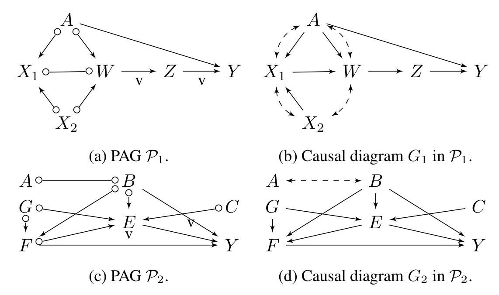
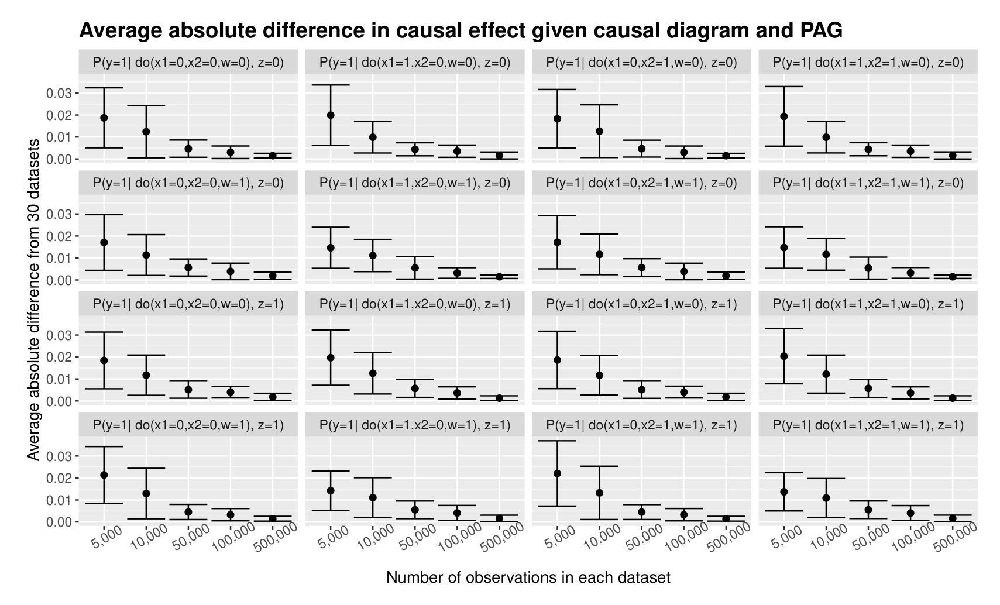
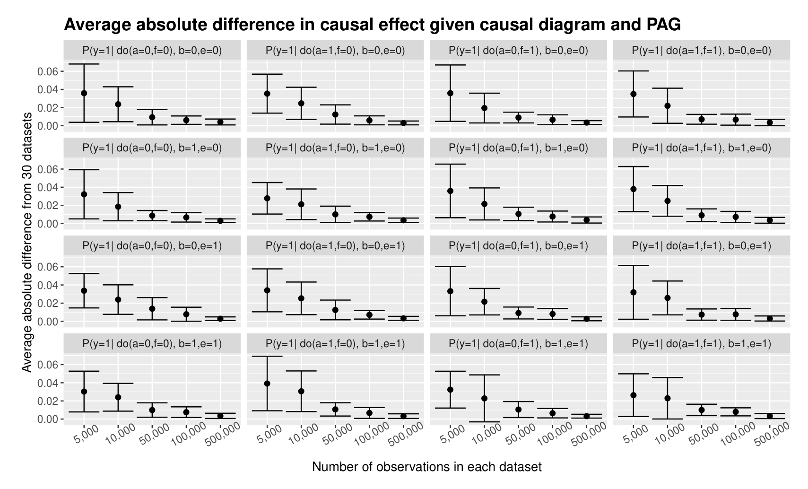
결과: 예상대로 참 인과 다이어그램으로 유도한 추정치와 대응 PAG로 유도한 추정치 사이의 평균 차이는 무시할 만한 수준입니다. 또한 데이터셋의 표본 수가 늘어남에 따라 표준오차가 크게 감소합니다. 이는 PAG에 담긴 인과 지식이 식별에 충분할 때, CIDP가 관측 데이터로부터 학습된 PAG만으로 목표 인과효과를 정확히 식별함을 보여 줍니다.
G.2 Hyttinen et al. (2015) 알고리즘과의 비교
Hyttinen et al.(2015) — 이하 HEJ — 은 마르코프 동치류로부터 조건부 인과효과 \(P(y \mid do(x), z)\)를 식별하는 대안적 접근을 제안합니다.
HEJ의 작동 방식:
- 동치류의 d-분리 제약 집합을 답 집합 프로그래밍(ASP) 솔버용 논리 표현으로 번역합니다.
- 제약 솔버에 동치류 안의 인과 다이어그램 \(\mathcal{G}\)를 반복적으로 질의하고, 각 \(\mathcal{G}\)에 대해 IDC 알고리즘(Shpitser & Pearl, 2006)을 호출해 원하는 효과를 식별합니다.
- 반환된 모든 식이 동일하면 그 효과가 동치류로부터 식별 가능하다고 판정합니다.
즉 HEJ는 동치류의 각 원소를 사실상 열거하는 접근이며, 샘플링 절차에 일부 제약을 걸어 명시적 열거를 피하려 하지만 여전히 매우 시간 소모적입니다.
실험 설정: 변수 수 \(n = \{5, 6, \dots, 12\}\)에 대해 30개의 무작위 PAG를 생성했습니다(고정 엣지 확률 0.4의 무작위 인과 다이어그램에 참 오라클을 적용). 실행 시간에는 PAG 생성 시간이 포함되지 않으며, 각 인스턴스에 90분(5,400초) 타임아웃을 두었습니다. HEJ는 저자 웹사이트의 구현(2022년 4월 18일 기준)을 ASP 솔버 clingo v5.5.2로 실행했습니다.
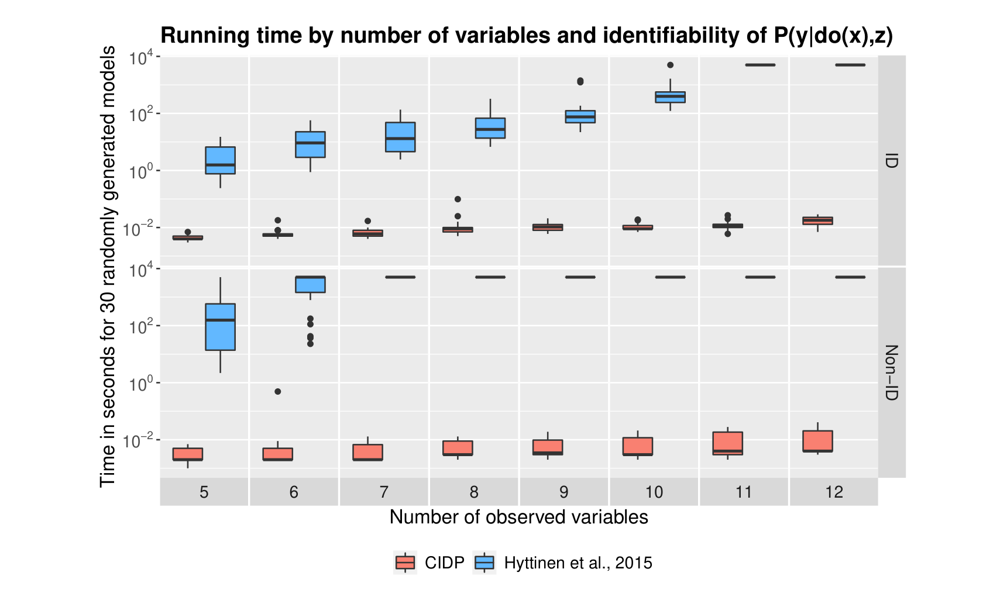
결과를 정리하면 다음과 같습니다.
| 항목 | HEJ | CIDP |
|---|---|---|
| 실행 시간의 변수 수 의존성 | 지수적 증가 | 완만한 증가 |
| 식별 가능한 모델 | 변수 10개 초과에서 타임아웃 | 모든 인스턴스 1초 미만 |
| 식별 불가능한 모델 | 변수 5개 초과에서 타임아웃 | 모든 인스턴스 1초 미만 |
효율성의 비결: 저자들은 Bayes-Ball 알고리즘(Shachter, 1998)에 기반해 PAG에서 확정 m-분리 가능성을 판정하는 선형 시간 알고리즘을 구현했습니다. 유사한 알고리즘이 PAG에서 조정집합 허용성을 검사할 때(Perković et al., 2018)와 MAG에서 m-분리를 판정할 때(van der Zander et al., 2019) 제안된 바 있습니다.
정리하며 (Closing Remarks)
이 논문의 논리 사슬을 한 장으로 요약하면 다음과 같습니다.
| 단계 | 내용 | 근거 |
|---|---|---|
| ① 문제 제기 | Pearl의 do-calculus는 완전히 특정된 다이어그램을 요구하지만, 데이터가 주는 것은 동치류(PAG)뿐이다 | §1, Figure 1 |
| ② 기존 계산법의 두 결함 | Zhang(2007)은 (i) 확정 상태가 아닌 경로까지 차단하려 하고, (ii) \(\mathbf{X}(\mathbf{Z})\)를 \(\mathcal{P}_{\overline{\mathbf{W}}}\)에서 평가한다 | Examples 1–2, Figures 2–3 |
| ③ 새 계산법 | 확정 m-연결 경로만 차단하고, \(\mathbf{X}(\mathbf{Z})\)를 유도 부분그래프 \(\mathcal{P}_{\mathbf{V} \setminus \mathbf{W}}\)에서 평가한다 | 정의 3, 정리 1 |
| ④ 여유 없음의 보증 | 규칙이 PAG에서 막히면 동치류의 어떤 다이어그램에서도 Pearl 규칙이 막힌다 | 정리 2 (원자적 완전성) |
| ⑤ 주변 식별 | pc-성분 · 영역 · 버킷 위에서 “제거 또는 분해”를 재귀하는 IDP. 더 약한 기준(명제 2)을 쓰는데도 표현력은 그대로이고 식은 단순해진다 | 정의 5·6, 명제 2·5, 알고리즘 1, 정리 3 |
| ⑥ 조건부 식별 | Phase I(개입→관측)로 원 엣지 시작 경로를 제거 → Phase II(관측→개입)로 결합효과를 쉽게 → Phase III에서 IDP 호출 | 관찰 1–3, 알고리즘 2 |
| ⑦ 경계 선언 | CIDP가 실패하는 각 지점마다 헤지를 갖는 다이어그램을 구성해 비식별성을 증명한다 | 명제 6·7, 정리 4 |
| ⑧ 실증 | 참 다이어그램 대비 추정 오차는 무시할 수준, 실행 시간은 HEJ 대비 수 자릿수 우위 | 부록 G, Figures 11–13 |
개인적인 감상 몇 가지를 덧붙입니다.
- 가장 인상적인 지점은 “차단해야 할 경로를 줄이는 것이 곧 계산법을 강화하는 것”이라는 관찰입니다. 불확실성이 있는 그래프를 다룰 때의 본능은 “애매하면 일단 막자”인데, 이 논문은 정확히 그 반대로 갑니다. 확정 상태가 아닌 경로는 애초에 논의 대상이 아니다 — Figure 2의 \(\langle X, Z_1, Z_2, Y \rangle\)처럼 충돌자인지 아닌지조차 말할 수 없는 경로를 “가능한 연결”로 세는 것이 오히려 정보를 잃는 보수성이었던 셈입니다. 정리 2(원자적 완전성)가 이 대담함을 사후적으로 정당화한다는 구성도 깔끔합니다.
- 규칙 3의 \(\mathbf{X}(\mathbf{Z})\)를 \(\mathcal{P}_{\overline{\mathbf{W}}}\)가 아니라 \(\mathcal{P}_{\mathbf{V} \setminus \mathbf{W}}\)에서 평가한다는 수정은 한 줄짜리 변경처럼 보이지만, Figure 3(b)와 3(c)의 대비가 보여 주듯 “개입된 변수를 잘라 내는 것”과 “지워 버리는 것”의 차이입니다. \(do(\mathbf{W})\) 하에서 \(\mathbf{W}\)를 경유하는 통로는 이미 죽었는데, 상부 조작은 그 시체를 그래프에 남겨 두어 허위 조상 관계를 만듭니다. 미세한 지점에서 실질적 표현력이 갈리는 좋은 사례입니다.
- 명제 2와 명제 8의 관계는 알고리즘 설계 일반에 시사점이 있습니다. 한 스텝만 보면 명제 8이 엄격히 강한데, 알고리즘 전체로는 둘이 동등하고 명제 2 쪽 식이 훨씬 단순합니다(정리 3, 명제 3). 국소적으로 강한 규칙이 전역적으로도 강한 것은 아니며, 분해와 재귀가 국소적 손실을 메울 수 있다는 사실을 정면으로 활용한 설계입니다. 부록 F.3에서 \(P_x(y)\)가 결국 조건부 확률의 곱으로 떨어지는 계산이 그 이점을 눈으로 확인시켜 줍니다.
- Phase I과 Phase II가 서로 반대 방향으로 변수를 옮긴다는 점도 인상적입니다. 처음 알고리즘 2를 읽으면 모순처럼 보이지만, 두 단계의 목적이 다릅니다 — Phase I은 IDP가 원리적으로 실패할 구조를 제거하는 방어이고, Phase II는 IDP가 다룰 문제를 줄이는 공격입니다. 그래서 Phase I만 FAIL을 던지고 Phase II는 조용히 종료합니다. 실패 지점을 하나로 모아 두면 완전성 증명이 그 지점들만 공략하면 된다는 구조적 이점도 따라옵니다.
- 완전성 증명의 형태가 특히 마음에 듭니다. “놓치는 경우가 없다”를 추상적으로 논증하는 대신, Lemma 6 → 9 → 10의 파이프라인으로 반례 다이어그램을 손으로 만들어 냅니다. 원 마크를 원하는 방향으로 확정해 MAG를 고르고, 그 결과 비가시적이 된 엣지에 점선 양방향 호를 얹어 교란시키면 헤지가 완성됩니다. 이런 구성적 증명이라야 “어떤 방법으로도 불가능”이라는 주장이 설득력을 갖습니다.
- 실용적 한계도 정직하게 짚어 둘 만합니다. 첫째, 모든 이론적 보증이 조건부 독립성 오라클 가정 위에 서 있습니다(저자들도 체크리스트에서 이를 유일한 가정으로 명시합니다). 유한 표본에서 FCI가 잘못된 PAG를 학습하면 하류의 완전성 보증은 그대로 무너집니다. Figure 11·12가 보여 주는 수렴은 참 오라클로 PAG를 생성한 뒤의 결과이므로, PAG 학습 오차는 이 실험이 측정하지 않는 부분입니다.
- 둘째, 버킷 단위 개입이라는 제약이 남습니다. 원 경로로 얽힌 노드 덩어리 내부에는 인과 정보가 없으므로 버킷의 부분집합에 개입하는 주변 효과는 원리적으로 식별 불가능한데, 허브처럼 거대한 버킷이 생기는 그래프에서는 물어볼 수 있는 질의 자체가 크게 제한될 수 있습니다. 이것은 알고리즘의 결함이 아니라 관측 데이터가 가진 정보의 한계이지만, 실무에서는 결국 같은 벽으로 체감될 것입니다.
주요 참고문헌 (Selected References)
- Hyttinen, A., Eberhardt, F., & Järvisalo, M. (2015). Do-calculus when the true graph is unknown. UAI, 395–404. (HEJ, 부록 G.2의 비교 대상)
- Jaber, A., Zhang, J., & Bareinboim, E. (2018a). Causal identification under Markov equivalence. UAI. (명제 8의 원 기준)
- Jaber, A., Zhang, J., & Bareinboim, E. (2018b). Causal identification under Markov equivalence: Completeness results. Technical Report R-42, CausalAI Lab, Columbia University. (Lemma 19)
- Jaber, A., Zhang, J., & Bareinboim, E. (2019a). Causal identification under Markov equivalence: Completeness results. ICML, 2981–2989. (IDP, 정리 6·7, Lemma 13)
- Jaber, A., Zhang, J., & Bareinboim, E. (2019b). Identification of conditional causal effects under Markov equivalence. NeurIPS. (완전성이 증명되지 않은 선행 조건부 알고리즘)
- Maathuis, M. H., & Colombo, D. (2015). A generalized back-door criterion. The Annals of Statistics, 43(3), 1060–1088. (Lemma 3, 5)
- Pearl, J. (1995). Causal diagrams for empirical research. Biometrika, 82(4), 669–688. (do-calculus의 원전)
- Pearl, J. (2000). Causality: Models, Reasoning, and Inference. Cambridge University Press. (정리 9, SCM)
- Perković, E., Textor, J., Kalisch, M., & Maathuis, M. H. (2018). Complete graphical characterization and construction of adjustment sets in Markov equivalence classes of ancestral graphs. JMLR, 18(220), 1–62. (Lemma 7, 9; m-분리 판정 알고리즘)
- Richardson, T., & Spirtes, P. (2002). Ancestral graph Markov models. The Annals of Statistics, 30(4), 962–1030. (MAG의 원전)
- Shachter, R. D. (1998). Bayes-ball: Rational pastime (for determining irrelevance and requisite information in belief networks and influence diagrams). UAI, 480–487. (선형 시간 m-분리 판정의 기반)
- Shpitser, I., & Pearl, J. (2006). Identification of conditional interventional distributions. UAI, 437–444. (정리 5 뒷문-헤지 기준, IDC)
- Tian, J. (2004). Identifying conditional causal effects. UAI, 561–568. (조건부 식별과 \(Q[\cdot]\) 표기)
- Tian, J., & Pearl, J. (2002). A general identification condition for causal effects. AAAI/IAAI, 567–573. (c-성분)
- van der Zander, B., Liśkiewicz, M., & Textor, J. (2019). Separators and adjustment sets in causal graphs: Complete criteria and an algorithmic framework. Artificial Intelligence, 270, 1–40.
- Zhang, J. (2006). Causal inference and reasoning in causally insufficient systems. PhD thesis. (Lemma 2, 11, 12의 증명 기법)
- Zhang, J. (2007). Generalized do-calculus with testable causal assumptions. AISTATS, 667–674. (명제 1, 정리 8 — 이 논문이 포함하는 선행 계산법)
- Zhang, J. (2008a). Causal reasoning with ancestral graphs. JMLR, 9, 1437–1474. (가시성, Lemma 10, 각주 15의 추측)
- Zhang, J. (2008b). On the completeness of orientation rules for causal discovery in the presence of latent confounders and selection bias. Artificial Intelligence, 172(16–17), 1873–1896. (PAG, FCI, Lemma 1·4·5·6)